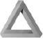

Kuantum mekaniği konusunda çok çalışmak gerekir. Ama içimden bir ses bana bunun her şeyin çözümü olmadığını söylüyor. Bu teoriyle birçok şey açıklanıyor; ama hâlâ O’nun sırrını çözebilmiş değiliz. Ben yine de, O’nun zar atıp kumar oynadığını, hiç mi hiç sanmıyorum.
Albert Einstein - fizikçi, yirminci yüzyıl
Belli ki Tanrı yalnızca zar atmakla kalmıyor, ayrıca gözleri kapalı oynuyor ve ara sıra da zarları görülemeyecek yerlere atıyor.
Stephen Hawking - fizikçi, yirmibirinci yüzyıl.
Caine, Jasper’i görünce çok rahatladı.
Sonunda bu karabasandan kurtulabilecekti. Artık her şeyin yoluna gireceğini düşünüyordu. Jasper ne yapılması gerektiğini biliyordu, onu bu karanlıktan çıkarıp aklını başına getirebilecekti. Jasper de aynı şeyleri yaşamıştı; o yolunu biliyordu.
Jasper ayağa kalkınca Caine ikizini sıkıca kucakladı. “Seni görmek ne kadar güzel tahmin edemezsin,” dedi Caine onu kolları arasında tutarak.
“Aslında edebilirim,” dedi Jasper kulağına. “Hoş geldin, kin, tin, cin.” Hafifçe kardeşinin omzuna vurdu ve ayrılıp oturdular.
Caine kardeşinin tam karşısına yerleşti. Nava onun yanına oturdu, Doc da Jasper’in yanına geçti. Caine konuşmaya başlayamadan yanlarına garson geldi. Susadıklarından değil de, ondan kurtulmak istediklerinden hemen içecek bir şeyler ısmarladılar.
Garson uzaklaşır uzaklaşmaz Jasper, Nava’ya döndü. “Merak etme, burada ajan yok, güvendeyiz.” İleri eğilip fısıldadı. “Yakında gelecekler, ama David’e bilmesi gerekenleri anlatacak kadar zamanım var, zar, gar, far.”
Nava, Caine’ye sorgulayarak baktı.
“Merak etme,” dedi Caine birden kendini sorgulayarak. Bu olayın başından beri bir tek Jasper’in kendine yardım edebileceğine inanmışken, şimdi kardeşinin gözlerindeki o çılgın bakışı görünce artık o kadar emin değildi. Ama yine de denemek zorundaydı. “Jasper ben...”
“David özür dilerim ama, sana duymak istediğin şeyi söyleyecek değilim. Bunların hepsi,” dedi kollarını açıp her şeyi göstererek, “Gerçek. Son yirmi dört saattir başına gelenler de öyle. Biliyorum çılgınca geliyor, ama diğer tarafa geçince anlayacaksın.”
“Nasıl olabilir?” Caine’nin dili damağı kurudu. “Yani Laplace’nin Şeytanı da mı gerçek?”
“Hem evet, hem hayır,” dedi Jasper.
Caine hayal kırıklığına uğramıştı. Jasper bir konuda haklıydı: Caine’nin duymak istediklerini söylemiyordu. Gözlerini kapayıp şakaklarını ovuşturmaya başladı. Bu işe yaramıyordu. Buradan çıkması gerekiyordu, uyanması gerekiyordu. Bir ses duyunca gözlerini açtı. Jasper masayı yumruklamıştı. Barda oturan birkaç kişi ne olduğunu görmek için o yana bakıyordu. Nava çok kızmış, Doc ise şaşırmıştı.
“David dinlemen gerekiyor. Zihnini açık tut, bana on dakika ver. Eğer on dakika sonra hâlâ deli olduğumu düşünüyorsan- ya da deli olduğunu- o zaman istediğini yapabilirsin. Ama bana zaman ver de açıklayayım.”
Caine karşı koymak istedi, ama kardeşinin yakarır gibi bakan gözlerinin içine bakınca ona bir fırsat tanımaya karar verdi. “Tamam,” dedi ve Dr. Kummar’ın deneysel ilaçlarını almaya başladığından beri başına gelen her şeyin gerçek olabileceği ihtimalini düşünmeye çalıştı. Tam o sırada garson içeceklerle geldi; ikizler birer kola istemişler, Nava bir Red Bull almıştı, Doc ise kahve içiyordu. Caine ilaçlarını alacak başka bir fırsatı olup olmayacağını bilmediği için hapını içti hemen.
“Peki,” dedi Jasper garson uzaklaşınca. “Bana Laplace’nin Şeytanı gerçek mi diye sordun, ben de hem evet, hem de hayır dedim. Bir an için cevabın evet olduğunu varsayalım ve sen Laplace’nin Şeytanı’nın hayata gelmiş hali ol.”
“Eğer öyle olsaydı,” dedi Caine, “O zaman her şeyi bilirdim, ama bilmiyorum.”
“Ama, her şeyi bilseydin, o zaman geleceği görebilirdin, değil mi?”
“Evet ama, Heisenberg kanıtladı ya...”
“Heisenberg’in canı cehenneme,” dedi Jasper elini sallayarak. “Biraz sonra dönerim o konuya. İlk önce bu soruya cevap ver: Eğer sen Laplace’nin Şeytanı olsaydın ve her şeyi bilseydin, o zaman geleceği görebilirdin, değil mi?”
“Evet,” dedi Caine sıkılarak, “Ama her şeyi bilsem bile bunu algılamam gerekirdi beynimle ve bu da imkânsız.”
“Doğru,” dedi Jasper gülümseyerek.
“Ama bu imkânsızsa ben nasıl Laplace’nin Şeytanı olabilirim ki?”
“Çünkü bu bilgileri algılaman gerekmiyor, sadece bilgiye ulaşman gerekiyor. Şöyle düşün: Eğer yalnızca Japonca konuşan biriyle konuşmak istesen ne yapardın, kın, tın, vın?”
“Ne bileyim. Japonca-İngilizce bir sözlük kullanırdım herhalde. Ya da bir çevirmen tutardım.”
“Aynen öyle” dedi Jasper. “Eğer düşüncelerini Japoncaya çevirebilecek bir şey bulabilirsen o zaman Japonca konuşman gerekmezdi. Böyle bir araç bulabilirsen tabii ki. Yani bilginin algılanması işini, bir kişiye ya da sözlük gibi bir şeye yüklerdin.”
“Tamam,” dedi Caine biraz tereddüt ederek. “Ama ne anlatmaya çalıştığını anlamıyorum. Bir dili konuşmakla tüm evrendeki bilgileri algılamayı nasıl birbirine benzetiyorsun anlamıyorum.”
“Neden, sen, ben, ten?” diye sordu Jasper.
“Çünkü bu bilgilere ulaşabilsen bile, bu evrende, ister insan olsun ister makine, bu kadar bilgiyi işleyecek bir zeka gücü yok.”
“İşte burada yanılıyorsun,” dedi Jasper. “Var.”
“Neymiş bu?”
“Toplu bilinçaltı.”
Caine ne dediğini anlamaya çalışırken kardeşine baktı. Üniversitede, 1990’larda Alman bir psikolog olan Carl Jung’un toplu bilinçaltı ile ilgili bir teorisi olduğunu okuduğunu hatırlıyordu, ama ayrıntıları aklında kalmamıştı. Jasper kardeşinin yüzündeki ifadeyi görünce açıklamayı sürdürdü.
“Daha yavaş anlatayım. Bilinç dediğimiz şey bir aracıdır. Çoğu insan günde en az sekiz saat uyur, yani hayatımızın üçte birini bilinçsiz bir durumda geçiririz. Jung bilincin en azından bir kısmının bilinçaltı tarafından yönlendirildiğine ve etkilendiğine inanıyordu.”
“Jung bilinçaltını üçe ayırdı. İlk olarak istediğin zaman hatırlayabileceğin kişisel hatıralar vardır. Örneğin, ilkokul dörtteki öğretmeninin adı gibi. Bunu hemen hatırlamayabilirsin, ama kendini zorlarsan bir şekilde bilinçaltından çekip çıkarıp bulursun.”
“Uzun dönem hafıza.”
“Aynen öyle, me, te, re,” dedi Jasper başını sallayarak. “İkincisi, istendiğinde hatırlanamayan kişisel hatıralardır. Bunlar bir zamanlar bildiğin ve artık hatırlayamadığın ya da bastırdığın bir çocukluk travmasıdır. Bu hatıralar da bir zamanlar belli bir şekilde bilincindeydi ama bir nedenden dolayı artık o kadar derine gömülmüşler ki bunları hatırlayamazsın.”
“Üçüncüsü ise toplu bilinçaltı. Buradaki bilgiler asla bilinçli olamaz çünkü hiçbir zaman bilincinde var olmamışlardır. Aslında özünde, toplu bilinçaltında kaynağı belli olmayan bilgiler vardır, zır, kır, tır.”
“Ne gibi?” diye sordu Nava.
“Yeni doğan bir bebek annesinin göğsünü nasıl emeceğini bilir ya da aç olduğunda ağlamayı. Yavru bir hayvan doğduktan birkaç saniye sonra ilk adımını atabilir. Balığın yumurtaları kırıldığında yavruları yüzmeyi bilir. Bunun gibi birçok şey sayılabilir. Doğadaki tüm canlıların karmaşık fiziksel becerileri, kendileri ve dünya hakkında bildikleri vardır, ama bunun kaynağının ne olduğu belli değildir.”
Caine kaşlarını çattı. “Ama bu bilgiler DNA’mızda kayıtlı değil midir zaten?”
“Biyologlara göre öyle, ama fizikçilere göre değil. Şimdiye kadar hiçbir biyolog bu bilgilerin nereden geldiği sorusuna bir yanıt bulamadı.”
“Ne dediğini anlayabildiğimden pek emin değilim.”
“Şu şekilde düşün: Evrendeki tüm canlılar tek hücreli bir canlıdan evrimle oluştuğuna göre, bu bilgilerin kodlanmadan önce öğrenilmesi gerekiyordu; ağlamayı öğrenmesi gereken bir ilk bebek vardı ya da yürümeyi öğrenmesi gereken ilk yavru. Ama biyologlara göre öğrenilen becerilerimiz bizden sonra doğanlara doğrudan aktarılamıyor.”
“Peki,” dedi Caine, “Diyelim ki biyologlar bunu açıklayamıyor, peki fizikçiler nasıl açıklıyor?”
“Birçok fizikçi -ve psikolog- canlıların içsel bilgilerinin bilinçli zihinde oluştuğuna inanıyor, ama bir tek kendi zihinlerinde değil.”
Jasper devam etmeden bir yudum kola içti. “Çağdaş fiziğe göre madde zamanda ve uzayda belirli noktalar olarak değil, dalgalar olarak var olur, biliyorsun değil mi?
Caine’nin başı dönüyordu, “Tam olarak bilmiyorum.”
Jasper iç geçirdi. “Eğer istatistik yerine fizik okusaydın her şeyi daha kolay anlayacaktın.”
“Sekiz yıl önce ne okuyacağımı seçerken böyle bir konuşmayı yapacağımı öngöremezdim herhalde.”
“Aslında öngörebilirdin, ama bunu sonra anlatırım,” dedi Jasper. “Ne diyordum ben?”
“Hiçbir şey zamanda ve uzayda belli bir noktada var olmaz demiştin.”
“Tamam, zam, bam, lam,” dedi Jasper. “1900’lerin başına kadar herkes 1687’de yazılan Principia’ya göre Isaac Newton’un ortaya koyduğu klasik fizik kurallarına inanıyordu. Fiziğin en önemli öğretileri Newton’un hareket kurallarıydı. Ona göre cisimlerin hareketi onlara nasıl bir güç uygulandığına bağlıydı.”
“Bu kurallar ve yasalar dahilinde gezegenlerin yörüngelerinden tut da arabaların nasıl çalıştığına kadar her şey açıklanıyordu. Özünde Newton, Tanrı’nın evreni değişmez bir takım kurallar çerçevesinde, belirli bir planla ortaya koyduğuna inanıyordu. Bu inanış topluma da yayıldı ve kapitalizm yayıldı. Böylece dünya arz-talep kurallarına boyun eğdi adeta.”
Jasper heyecanlandığı için nutuk çekermiş gibi bir sesle, hızla konuşuyordu. “Sonra 1905’de Einstein Görecelik Teorisi’ni ortaya attı. Ona göre de her şey göreceliydi. Einstein, Newton’un mutlak olarak var olduğunu saydığı konum, hız, ivme gibi şeylerin başka bir şeye göre göreceli olarak var olduğunu kanıtladı. Dahası zamanın göreceli olduğunu kanıtladı.”
“Şimdi anlayabileceğimiz şekilde anlat Jasper,” dedi Caine saatine bakarak. “Beş dakikan kaldı.”
“Tamam, zam, bam, lam,” dedi Jasper. “Hızlı anlatayım.”
“Einstein iki şey söyledi: Birincisi, ışık hızı nerede olduğuna göre veya ne yaptığına göre değişmiyordu,” dedi Jasper bir parmağını kaldırarak. “İkincisi, ‘fizik kuralları birbirine göreceli olarak sürekli aynı hızda hareket eden iki gözlemci için de aynıdır’ dedi. Yani ikimiz de bir trendeysek ve tren hızlanıyorsa, dışarıyı aynı şekilde görürüz. Ama sen trendeysen, ben de rayların yanında duruyorsam, o zaman faklı görürüz. Bu çok basite indirgemiş bir örnek, ama ne demek istediğimi anladın değil mi?”
Caine, Philadelphia’ya gelirken gördüğü manzaraları aklından geçiriyordu başını sallarken.
“Şimdi. Saniyede 186,000 mil olan ışık hızına yakın bir hızdaki bir rokette gidersem garip bir şey olur. Sana kıyasla benim için zaman yavaşlar. Roketten indiğimde senden genç olurum.”
“Einstein bunu kanıtladığında zamanın bile göreceli olduğunu kanıtladı. Sonra da enerji ve kütlenin içsel olarak bağlantılı olduğunu gösterdi: Bir kütle ne kadar ivme kazanırsa durağan bir kütleye kıyasla daha ağır olacaktır, sır, tır, kır.”
“Bir örnek ver,” dedi Caine kardeşini yavaşlatıp düşünebilmek için.
“Peki. Kalkan bir uçakta bedenin koltuğa yapışır değil mi? Sanki birden...”
“Ağırlaşmışsın gibi,” dedi Caine ne demek istediğini anlayınca.
“Aynen öyle. Ama uçak yükselip de hızı azalınca yine normale dönersin. E= mc2 formülü de buradan geliyor. E enerji, m kütle, c ise ışık hızı. C hep aynı olduğuna göre, enerji arttıkça kütle de artar demek. Bu yüzden de bir uçaktaysan, kalktığında, hızlandığında, çevrendeki her şeye oranla daha fazla kinetik enerjin oluyor; bu nedenle de göreceli olarak sanki ağırlığın da artmış gibi oluyor.”
“Anladım,” dedi Caine. “Peki bunun dalgalarla ne ilgisi var?”
“Daha önce de söylediğim gibi Newton maddenin zamanda ve uzayda belli bir yeri olduğunu düşünmüştü, ama Einstein her şeyin göreceli olduğunu gösterdi; fizikçiler de hiçbir maddenin tam bir konumu ya da tam bir yaşı olmadığını anladılar. Bu da özel görecelik dediğimiz maddenin enerji emilimini ve dağıtımını inceleyen dalın geliştirilmesini sağladı.”
“Bu da tüm maddelerin temel taşları olan temel partiküllerin bulunmasını sağladı, bunlara da ‘kuark’ denir. Fizikçiler on iki farklı kuark bulabildiler: Üst, alt, çekici, tuhaf, tavan, taban ve de antipartiküllerini... ”
“Dur,” dedi Caine elini kaldırarak. “Bunlar maddenin temel taşlarının adları mı?” Caine, Jasper konuşurken sözünü kesmeyen Doc’a baktı. Kardeşinin tamamen keçileri kaçırıp kaçırmadığından emin olmak istiyordu.
Doc başını salladı. “Doğru söylüyor Yağmur Adam.”
“Tamam,” dedi Caine şakaklarını sıvazlayarak. “Devam et.”
“Peki. On iki farklı kuark olmasına rağmen, bizim gerçekliğimizdeki maddelerde bir tek üst ve alt kuarklar var ve kuark benzeri leptonlar.” Jasper nefes aldı. “Önemli olan kuarkların ve leptonların madde olmadığını anlamaktır.”
“Nedirler?” diye sordu Caine.
“Enerji. Anladın mı? Kuantum fizikçilerine göre madde aslında yoktur. Klasik fizikçilerin madde sandıkları şey aslında bir takım elementlerin bileşimidir, onları da atomlar oluşturur, onları da kuarklar ve leptonlar oluşturur yani enerji. Yani aslında madde enerjidir.” Jasper söylediklerini anlamaları için sustu ve sonra devam etti. “Şimdi bil bakalım başka ne enerjidir?”
Caine cevabı bulunca, Jasper’in ne demeye çalıştığını da anladı. “Düşünceler,” dedi Caine.
“Aynen öyle. Tüm bilinçli ve bilinçsiz düşünceler beyinden elektrik sinyalleri yollayan nöronlar tarafından oluşturulur. Anladın mı? Madde enerjiyse ve düşünce de enerjiyse, o zaman tüm madde ve düşünceler birbirine bağlıdır, ilişkilidir. İşte toplu bilinçaltı da bundan gelir; bu yaşayan, yaşamış ve yaşayacak her canlı tarafından paylaşılan, birbirine bağlı, bilinçsiz zihindir, bir, kir, pir.”
“Peki,” dedi Caine kardeşinin dediklerini anlamaya çalışarak. “Diyelim ki toplu bilinçaltının fiziksel bir boyutu olduğunu kabul ettim, ama bunun zamanı aşabilmesini anlayamadım.”
“Çünkü zaman görecelidir,” dedi Jasper. “Düşünsene. Işık hızından hızlı olan tek şey...”
“Düşünce hızıdır,” dedi Caine sanki bir bulmacanın son parçasını oturtmuş gibi.
“Evet, özellikle de bilinçsiz düşünce. Partüküller ışık hızına yaklaştıkça zaman yavaşladığı için duranlara göre bilinçsiz zihnin sonsuz olduğunu düşünebiliriz. Yani, bir anlamda, zaman diye bir şey yok.”
Caine başını salladı. Garip ve deli bir şekilde kardeşinin söyledikleri mantıklıydı. Doc’a baktı aklını yitirmediğinden emin olmak için, o da başını sallıyordu.
“Bunları nasıl akıl ettin?” diye sordu Doc.
“Felsefe,” dedi gülerek Jasper.
“Açıklasana,” dedi Doc.
“Tüm doğu dinlerine göre evren enerjidir, buna kuantum fiziği de kanaat getirdi. Ayrıca, herkesin zihninin evrenle bir olduğunu düşünürler, bu da Jung’un toplu bilinçaltını anımsattı bana.”
“Budistlere göre her şey geçicidir. Buddha, dünyadaki bütün acıların kaynağının insanların maddelere ve fikirlere bağlılığından kaynaklandığını ve akan, değişen ve hareket eden evreni kabul etmedikleri için böyle olduğunu düşünmüştü. Budizme göre, uzam ve zaman, bilinç yansımalarından ibarettir. Budistler objeleri maddeler olarak değil de, evrensel bir hareketin içinde var olan dinamik süreçler olarak görürler ve bu da sürekli değişmektedir. Yani, maddeyi enerji olarak görüyorlar, aynen kuantum fiziğinde olduğu gibi.”
“Taoistler de evrenin dinamik döngüsüne inanırlar. Tao ‘yol’ demektir. Evreni bir enerji sistemi olarak görürler -buna chi derler- ki bu da sürekli değişir ve akar. Buna göre de kişi tüm evrende tek bir elementtir ya da bu enerjinin bir parçası. Doktrinleri I Ching’dir yani Değişim Kitabı. Buna göre denge ancak yin ve yang arasında bir uyum olduğunda sağlanabilir. Bunlar da evrendeki bağıntılı doğal güçlerdir. Bu da kuantum fiziğinde geçer, çünkü her şey partiküllerden oluşur ve bunları bir arada tutan da subatomik enerjidir.”
Caine’nin aklı iyice karıştı. “Ama tüm bu felsefeler binlerce yıllık. Bunları kuantum fiziğinden önce nasıl bilebildiler?”
“Toplu bilinçaltı sayesinde,” dedi Jasper. “Unutma, zaman yok, yani düşünce hem ileri hem de geri akabilir. Büyük düşünürler, felsefeciler, bilim adamları hepsinin ‘zamanının ötesinde’ oldukları söylenir, çünkü dev adımlar attılar. Bazıları buna deha diyor, ama deha müthiş bir öngörü değildir de nedir? Anlayamıyor musun? Sözde dahiler yalnızca toplu bilincimizi bizden daha iyi görebilenlerdir, bir, kir, pir.”
Doc derin bir nefes alıp Caine’ye baktı. “Lokantada kalkmamız gerekeceğini işte böyle bildin. Gelecekteki kendinin bilinçaltına erişmiş olmalısın.”
Caine başını salladı. Bu da fazlaydı artık. “Diyelim ki herkesin bilinçaltının bir şekilde bağlantılı olduğunu kabul ettim, peki ben bunu nasıl görebiliyorum ki?” Caine bu soruyu dile getirdiği anda cevabı kendi buldu. “Tabii ki... Nöbetler sırasında değil mi?”
“Bence bunlar nedenler değil, semptomlar,” diye açıkladı Jasper. “Herkes toplu bilinçaltını kullanabildiğine göre demek ki beynimizde oraya erişmenin bir yolu var. Beyninde bence bir şey var,” dedi Caine’nin başına işaret ederek. “Temporal lobunda... Ve bunun sayesinde başkalarının yapamadığı bir şekilde toplu bilinçaltına girebiliyorsun. Şimdiye kadar bunu her yaptığında beynin kaldıramıyordu. O zaman da nöbet geçirip bayılıyordun. O zaman da gerçekten bilinçaltına indin, cin, kin, tin.”
“Bence Dr. Kummar’ın deneysel ilaçları sayesinde beynin bir şekilde düzeldi ve bilinçaltına girebilirken, bir yandan da bilinçli kalabiliyorsun artık. O zaman da geleceği görebiliyorsun.”
“Ama fizikle nasıl açıklanır bu anlayamadım.” Caine duraksayıp aklını toparlamaya çalıştı ve sonra devam etti. “Laplace geleceği görebilmek için her şeyi bilmek gerektiğini söyledi; Heisenberg ise doğada hiçbir şeyin gerçek konumu olmadığını ileri sürdü, yani her şeyi bilmek imkânsız. Bu yüzden de geleceği görebilmek imkânsız ve Laplace’nin Şeytanı gibi bir şey var olamaz, değil mi?”
“Bunu daha çözemedim, mim, sim, tim,” diye itiraf etti Jasper, sonra hemen ardından da ekledi. “Ama bu, teorimin yanlış olduğu anlamına da gelmiyor.”
Caine, Jasper’in söylediklerini sindirmeye çalışırken kimse tek kelime etmedi.
“Bir yolla öğrenebiliriz bunu,” dedi Doc.
“Nasıl?” diye sordu Caine.
“Geleceğe bakarak,” diye cevap verdi Doc.
“Bence bu iyi bir fikir değil,” dedi Nava, Caine’yi şaşırtarak. Şimdiye kadar tek kelime etmediği için Caine onun orada olduğunu neredeyse unutmuştu.
“Neden?” diye sordu Doc.
“Ya tehlikeliyse?” dedi Nava bir sigara yakarak.
“Kimin için tehlikeli?”
“Hepimiz için,” dedi Nava sigarasının dumanını üflerken. “Özellikle David için.”
“Neden?” diye sordu Doc bir kez daha.
“Ya geri dönemezse? Ya toplu bilinçaltına girer ve bir daha çıkamazsa? Siz dediniz ya orası zamanın var olmadığı bir... Bir, her neyse işte. Birkaç saniyeliğine toplu bilinçaltına daldı diyelim, geri döndüğünde bedeni yaşlanıp ölmüş olabilir.”
Caine’nin birden midesi kalktı. Bu olasılığı hiç düşünmemişti. Bir yandan bunu yapmak istiyordu, ama diğer yandan çok korkuyordu. Olasılıkları düşünürken iki şeyin farkına vardı: Birincisi, Jasper’in anlatacakları bitmişti. İkincisi, artık bunun bir hayal veya yanılsama olduğunu düşünmüyordu.
Mümkün değildi, çünkü, o bunları hayal edecek kadar fizik bilmiyordu.
“Ne bok yediğini sanıyorsun sen?”
Forsythe telefonu kulağından uzaklaştırdı. FBI’nın operasyonlardan sorumlu direktör yardımcısına cevap vermeden derin bir nefes aldı. Adam tren garında olanlardan dolayı köpürmüştü.
“Sam, takdir edersin ki böyle olacağını bilemezdim...”
“Bahane gevelemeyi kes!” dedi Sam Kendall bağırarak. “Bana birkaç ajanı bir sivilin peşine takacağını söyledin, ama kaçak bir CIA ajanından hiç söz etmedin!”
“Ben...” Forsythe duraksadı. Vaner’in işin içinde olduğunu nasıl bu kadar çabuk öğrendiğini kestiremiyordu.
“Boş versene James. Beni oyuna getirdin. Aferin sana. Kim aklına soktu bu işi? Nielsen mi?” Forsythe bir şey söylemeye çalışmadan, adamın bağırmasına izin verdi. “Onun da senin de canınız cehenneme. Bir de sanki yetmezmiş gibi Crowe’yi de işin içine sokmuşsun. Nasıl oldu da sağ çıktı herkes? Mucize olmuş.”
Kendall durup bir nefes aldı bağırmaya devam etmeden. “Ayrıca, gelecek ay Mac Dougal’ın seni işten atacağını da duydum. Bana kalırsa gelecek ayı beklemeye gerek yok, şu anda kovuldun.”
Forsythe telefonu sıkıca kavradı. “Senin böyle bir yetkin...”
“Sen kim olduğumu sanıyorsun lanet olasıca?” Kendall avaz avaz bağırıyordu. “Ben FBI’nın direktörüyüm ve ister inan ister inanma, benim de arkam sağlam. Bu sabahki olaylar hakkında Senatör Mac Dougal’la konuştum ve ikimiz de hemen istifa etmenin doğru olacağına karar verdik. Otuz dakikan var, sonra da askerler gelip seni dışarı atacaklar. Seninle iş yapmak bir zevkti pislik.” Kendall telefonu öyle bir kapadı ki, Forsythe’nin kulak zarı patlıyordu az kalsın.
Forsythe neye uğradığına şaşırmıştı. Daha hazır değildi. Tversky’nin çalışmaları gelecek vaat ediyordu, ama ya sonunda bir işe yaramazsa? UGA’nın veri tabanını kullanıp tek başına iş çevirecek bir ayı daha olduğunu düşünmüştü. Şimdiyse elinde hiçbir şey kalmamıştı. Tversky ve şeytanı dışında hiçbir şey. Onu bile elinden kaçırmıştı.
Forsythe bir an için durdu, sonra da Grimes’i çağırdı bürosuna. “Steven bunu nasıl söyleyeceğimi bilemiyorum ama...” duraksadı ve Grimes’e yalan söylemeden önce adamın en kötüsünü düşünmesine izin verdi. “Kovulduk. Bugün bu işte son günümüz.”
“Ne? Yani, senin işinin bittiğini biliyordum, ama beni neden kovuyorlar ki?”
“Politik bir karar,” dedi Forsythe. “Ama belki bu ikimiz için de iyi olur.”
“Bu ne demek şimdi?” diye sordu yüzünü buruşturan Grimes.
Forsythe bunu ona anlatmanın en iyi yolunu düşündü. Grimes’in, son altı aydır onu yanına almadan ayrılmayı düşündüğünü bilmesini istemiyordu. Araştırma laboratuvarını kurmuştu zaten ve 10 milyon dolar da parası vardı. Tek eksiği bilim adamı kadrosuydu. Özel sektörden adam bulmak istemişti. UGA’nın adamlarını işe almayı düşünmemişti, ama artık buna zamanı yoktu.
Ayrıca, UGA’nın sırtından araştırma yapmayı da kesecek değildi. Grimes gerçekte kovulmadığına göre, biri Forsythe’nin ne işler çevirdiğini anlayana kadar onun güvenlik kodları hâlâ işlevseldi. Zaten kısa bir sürede de ihtiyacı olan tüm bilgileri almış olacaktı. Forsythe bundan hiç ama hiç hoşlanmasa da, Grimes şu anda elinin altında olmalıydı.
“Aslında sana sürpriz yapacaktım ama...”
Forsythe on beş dakika içinde Grimes’e planını anlattı ve Grimes’in kovulduğunu bir tek kendisinin bildiğini özellikle vurguladı. Grimes de bunu açık etmemeliydi.
Her şeyi anlatınca Grimes sivilce dolu çenesini ovuşturdu. “Pay isterim.”
“Ne?”
“Duydun beni. Sana katılmamı istiyorsan, ben de pay isterim.”
“Ne kadar?” diye sordu masanın altında yumruklarını sıkan Forsythe.
“Yüzde 10.”
Forsythe ıslık çaldı. Pazarlık edecek zamanı yoktu ve Grimes’in bu konuda keçi kadar inatçı olabileceğini biliyordu. Forsythe anında karar verdi.
“Her şey benim olsa sana istediğin yüzde 10’u verirdim, Steven. Ama yatırımcılar zaten yüzde 80’ini ellerinde tutuyorlar.”
Forsythe bu yalanı çok rahat söylemişti. Yatırımcılar akbaba gibiydi, ama 12 milyon dolarlık yatırım yapıp yalnızca yüzde 35’ini istemişlerdi. Bunun 2 milyon dolarını da zaten laboratuvarı kurmak için harcamıştı. “Bana kalan kısmın yüzde 10’unu veririm sana.”
“Ama bu yüzde 2 eder,” dedi burnunu çekerek Grimes.
“Bu iyi bir teklif bence,” derken Forsythe’nin yüzü çok ciddiydi.
“Yüzde 3 yap şunu da anlaşalım,” dedi Grimes.
“Peki.”
Grimes terli elini uzattı. Forsythe adamın elini sıktıktan sonra elini hemen sildi.
“Mükemmel,” dedi ve hemen Grimes’e hâlâ patronu olduğunu vurgulamaya çalıştı. “Şimdi Crowe’yi bağla bana.”
“Tabii ki... Ortak.” Grimes sapsarı dişlerini göstererek gülümsedi bürodan çıkarken.
On sekiz saniye sonra Forsythe’nin telefonundaki kırmızı ışık yanıp sönmeye başlayınca derin bir nefes alıp telefonu kaldırdı.
“Bay Crowe. Ben James Forsythe. Planlarda bir değişiklik oldu...”
Crowe telefonu kapayınca, bir süre gökyüzüne bakıp bir şey düşünmemeye çalıştı. Güneş sonunda yüzünü göstermişti ve bir gökkuşağı vardı. Betsy gökkuşağını severdi. Ne zaman bir gökkuşağı görseler arabaya biner ve başladığı yeri bulmak için sürerlerdi.
Gözleri doldu. Betsy babasıyla o kadar gurur duyardı ki. Acaba babasını şimdi görse ne derdi? Forsythe’nin ona bir şeyler yutturmaya çalışırmış gibi yağlayıp ballamasından anladığı kadarıyla, yapması gereken şey pek de iyi bir şey değildi, sonucu da iyi olmayacaktı. Ama alacağı para iyiydi, bu fırsatı kaçıramazdı.
Forsythe hâlâ Caine’yi yakalamasını istiyorsa, bunu yapmanın bir yolunu bulacaktı. Cep telefonunun rehberini karıştırıp aradığını buldu. Jim Dalton’un numarası mavi ekranda parlıyordu.
Dalton ve çetesi bir uyuşturucu kaçakçısına güvenlik sağlamak konusunda Crowe’yi oyuna getirdiklerinden beri, Crowe onlarla bir daha çalışmayacağına kendi kendine yemin etmişti. Ama bir yemini daha bozsa ne olurdu ki? Zaten diğer satılık insanlar da daha haysiyetli değildi. Şiddet eğilimini kontrol altında tutalabildiği taktirde, Dalton tanıdıkları içinde bu işi en iyi yapabilecek adamdı.
İç geçirip numarayı çevirdi. Dalton ilk çalışta açtı telefonu.
“Marty, ne var ne yok dostum?” dedi Dalton.
“Bir iş var. Sırtımı kollaman gerek.”
“Ne zaman?”
“Şimdi.”
“Keşke elimden bir şey gelse, züppenin teki için birkaç iş yapmam gerek. Gelecek hafta olsa?”
“Beklemez,” dedi Crowe başını ovuşturarak. “İşler ne kadar getiriyor bugünlerde?”
Dalton cevap vermeden bir an duraksadı. “Beş günlük iş için 30.”
“Tüm ekip için mi?”
“Yok, sadece ben. Rainer, Leary, McCoy ve Esposito da on beşer alıyor.”
Dalton yalan söylüyordu, ama bu Crowe’nin umrunda değildi, çünkü Forsythe’nin parasını harcıyordu.
“Müşteri size haftalık toplam 150.000 verir,” dedi Crowe. “Nasıl isterseniz öyle paylaşın aranızda.”
Dalton ıslık çaldı. “Nasıl bir işe karıştın böyle Marty?”
“Her zamankinden daha beter bir iş değil. Var mısın, yok musun?”
“İş ne?”
“Biraz gözetleme, adam kaçırma, belki de devriye nöbeti falan.”
“Hedef kim?” diye sordu Dalton şüpheci bir şekilde.
“Öyle peşinden ağlayanları olacak biri değil. Sivil bir herif.”
“Bu kadar para niye? Bu işi tek başına da halledebilirsin gibime geliyor.”
“Bir de koruması var.”
“Eee?”
“Ve o da eski bir CIA ajanı,” dedi Crowe bu kadar soru sorulmasına kızarak, “Kadın bir gizli operasyon uzmanı. Çok iyi.”
“Kadın mı?” diyerek güldü Dalton. “Madem hanım arkadaşınla başın dertte, ekip ve ben imdadına yetişiriz. Ama parayı hemen isterim.”
“Olmaz. Yarısı peşin, yarısı hedefi ele geçirince.”
Dalton bir an için susunca Crowe hiç endişelenmedi.
“İş nerede yapılacak?”
“Tam bilmiyorum, ama yakınlarda bir yerde herhalde.”
“Buluşalım mı?”
“Hayır,” dedi Crowe bir yandan da düşünerek. “Ekibi topla, silahlandır, sonra da ayık kalıp haber bekleyin.”
“Anlaşıldı,” dedi Dalton.
“Neresi olduğu bildirilince ararım seni.”
“Merak etme, tamamdır. Seninle iş yapmak her zaman zevktir Marty.”
Crowe telefonu kapadıktan bir dakika sonra telefonu çaldı. Dalton mesajla hesap numarasını göndermişti. Crowe bu mesajı Grimes’e gönderip, parayı nasıl havale edeceğini anlattı. Sonra da dairesine döndü biraz uyumak için. Aslında saat daha erkendi, ama vakit varken biraz kestirmek istiyordu. Bu gecenin uzun olacağını hissediyordu.
Dalarken operasyona takıldı aklı. Caine her neredeyse Grimes’in onu bulacağına emindi. Bu sadece biraz zaman alacaktı. Onu bulduklarında da, kendisi devreye girip Caine’yi enseleyecekti. O arada Vaner’i öldürmek zorunda kalacaktı herhalde.
Şimdilik tek yapabileceği şey beklemekti.

Caine önündeki kolaya baktı. “Keşke daha ağır bir içki ısmarlasaydım.”
“Deneyecek misin?” diye sordu Doc.
“Bilmiyorum,” dedi Caine. “İstesem bile bunu nasıl yapacağımı bildiğime emin değilim.”
“Ben hâlâ çok tehlikeli olabileceğini düşünüyorum,” dedi Nava. “Özellikle de kaçarken çok tehlikeli bu.”
“Trende bunu sorun etmedin ama,” diye karşı çıktı Caine.
“Ama o farklıydı,” dedi Nava. “Ayrıca ne gibi riskleri olduğunu bilmiyordum o zaman.”
“Ya şu anda izimizi bulmak üzerelerse?” diye sordu Caine. “Belki de asıl riskli olan bunu denememek.”
Nava kaşlarını çatıp sigarasını söndürdü.
“Haklı aslında,” dedi Doc.
“David dene. Ses...” Jasper birden sustu. “Bence zamanı geldi.”
Caine kardeşine baktı. Jasper hâlâ ona her şeyi anlatmamıştı -mesela kendisine Doc’un cep telefonundan ulaşacağını nasıl bildiğini- ama Caine bunun bir nedeni olduğunu biliyordu. Jasper fizik dersi verdikten sonra herkes sanki David’in olağanüstü yetenekler sergileyen tek kardeş olmadığını unutmuştu.
Aslında bu mantıklıydı. Onlar tek yumurta ikizydi. Yani David bir şey yapabiliyorsa, büyük bir olasılıkla Jasper de yapabilirdi. Caine bu yüzden kardeşine daha mı az, yoksa daha mı çok güvenmesi gerektiğini bilemedi. Jasper’in gözlerine bakınca kararının ne olması gerektiğini anladı.
“Deneyeceğim,” dedi Caine. Kendinden eminmiş gibi konuşsa da, aslında korkuyordu. Tüm diğer dertleri, akademik kariyeri, nöbetleri, Nikolaev, şu anda yapmak üzere olduğu şeye kıyasla çok önemsizdi. Ya Nava haklıysa? Ya sonsuza dek kalırsa zamanın olmadığı bir boşlukta? Çıldırır mıydı? Ya da zaten delirmişti... Hayır, delirmemişti. Hiçbir zaman aklını kaçırmamıştı, sadece gerçeği kabul edemeyecek kadar korkmuştu.
Derin bir nefes aldı. Korkusunu düşünmeyip bir an önce yapmalıydı bunu. Tamam. Aynen korkusunu düşünmemek için kendi içine kapandığı zaman yaptığı gibi; arkadaşlarından, öğrencilerinden, hayatından kopmuştu. Hayır, o farklıydı. O zamanlar bir seçim şansı olmamıştı. Olmamış mıydı? Şimdi geri dönüp baktığında korkakça davrandığını anladı. Artık bir korkak gibi davranmayacaktı.
Gözlerini kapadı ve...
...
Hiçbir şey olmadı.
Caine hâlâ fonda Mick Jagger’in şarkı söylediğini duyabiliyordu. Oturduğu tahta bankı ve dizinin zonkladığını hissediyordu. Bardaki terle karışık acı bira kokusunu da alabiliyordu. Tek fark, gözlerini kapamadan görebiliyordu, ama şimdi karanlıktaydı.
Derin ve yavaş nefesler almaya çalıştı. Lokantada neyi düşünmüştü? Hatırlayamadı. Patates yemek üzereydi, sonra Doc’la Peter’in kan revan içinde yattıklarını görmüştü.
Altı kez klik sesini duydu.
İlk başta Caine bu seslerin başka bir yerden geldiğini düşünmüştü, sanki içinden gelmişti, ama garson kadın konuşmaya başlayınca bu sesin kadının ayak sesleri olduğunu anladı.
“Birer tane daha alacak mısınız?”
“Biraz sonra gelsen?” dedi Doc. “Bir şeyin tam ortasındayız da.”
“Tabii.”
Birden karanlık dağılmaya başladı, sanki biri yavaşça ışıkları yakıyordu. Caine gözlerini hâlâ kapalı tutsa da görebiliyordu. Gözlerinin önünde bir tek görüntüler değil, bilgi de vardı.
...
Garson kızıl saçlı, derin dekoltesi olan siyah bir bluz giymiş, aşırı makyaj yapmış bir kadın. Adı Allison Gully. Herkes ona Ally diyor. Nick Broughton’un kendisine vurduğu yerde kalan izi kapamak için koyu bir göz makyajı yapmış. Aslında onu terk etmek istiyor, ama korkuyor.
Caine’nin masasındakiler içecek bir şey istemedikleri için bara dönüyor ve Tim Shamus ile flört ediyor. O buralarda yeni, kadın da hoş olduğunu düşünüyor. Tim o gece eve gidince kadınla olma hayalleri kuruyor. Evde volta atıyor. Sonunda sabah dörtte yatıyor. Kalktığında güneş çoktan ağırmış.
Tim geç kalıyor. Arabasına koşuyor. Siyah bir 89 Ford Mustang kullanıyor. İşe giderken kırmızı ışıkta geçerek Marlin Kramer’in geçmesini engelliyor. Marlin çok kötü bir gün geçiriyor. Tim’e korna çalıyor ve kızarak yanlış yola dönüyor. Trafiğe takılıp Houston’a gitmek üzere bineceği uçağı kaçırıyor. Matt Flannery bekleme listesinde ve Marlin’in yerini ona veriyorlar, o da Lenore Morrison’un yanına oturuyor. Uçuş boyunca konuşuyorlar. Uçak inince adam kadının numarasını istiyor. On beş yaşında Derek Cohen’le sinemada öpüştüklerinden bu yana ilk defa yüzü kızarıyor kadının.
Matt ve Lenore üçüncü kez görüştüklerinde sevişiyorlar. İlk birkaç seferinde prezervatif kullanıyorlar ama sonra kullanmıyorlar. Ne yazık ki güvenli değil kullanmamaları, çünkü Lenore HIV pozitif. Matt’te AIDS çıkıyor. Tek başına bir hastane köşesinde ölüyor. Aslında Beth Peterson’la evlenip iki çocuğu ve üç torunu olabilirken.
....
ya da
....
Caine bir içki ısmarlıyor. Ally bir sipariş aldığı için on saniye geç gidiyor bara. Giderken Aidan Hammerstein ve Jane Berlent ona işaret edip iki içki ısmarlıyorlar. Ally, Tim’e acele edip iki içki hazırlamasını söylüyor. Flört edecek zamanları yok. Ally hem Caine’nin içkisini, hem de Aidan ve Jane’nin içtikleri Alabama Slammerları getiriyor. Jane feci sarhoş oluyor. Eve gitmektense Aidan’la dolaşmaya karar veriyorlar. Zaten bugün kadının doğum günü. Yirmi beşine basmış.
O içmeye devam ediyor... Tim Shamus saat 2’de yatıyor ve zamanında kalkıyor, Marlin Kramer uçağa yetişiyor... Jane eve giderken bir Koreli’nin dükkânında durup bir paket Marlboro Lights alıyor. Bu yirmi bir yaşından beri içtiği ilk sigara. O zaman aşırı yemek yiyip üstüne sigara içtiğinde kusmuş ve bir daha içmeyeceğine yemin etmiş. İçmiyor da zaten. Doksan yedi yaşına kadar yaşıyor. Seth Grenberg altı torununun arasında en sevdiği, o da Jane’nin cenazesinde ağlıyor... Ama şimdi yirmi beşinde sigara içiyor. Tadı gecenin serin havasında çok hoş geliyor. ‘Neden bıraktım acaba?’ diye geçiriyor içinden. Bir daha asla bırakmıyor. Aidan dumana katlanamıyor. Bu da kavgaya neden oluyor. O da sekreteri Tammy Monroe ile bir ilişki yaşıyor. Jane’den ayrılıyor. O psikoloğa gidiyor. Adam, Zoloft yazıyor. Bu bir işe yarıyor ama kadını iyileştirmiyor. Otuzuncu yaş gününde yirmi hap yutup üstüne tekila içerek kutlama yapmaya karar veriyor. Cesedi, komşusu bir koku olduğundan şikâyetçi olduğunda, iki hafta sonra bulunuyor
....
“Dur!” Caine neredeyse nefes alamıyordu. Hemen gözlerini açıp garsona baktı. Ally, adı Ally onun; hortlak görmüş gibi bakıyordu.
“Bir şey mi istedin?” diye sordu Ally.
Caine kadının omzunun üzerinden sarışın bir adamın (Aidan) garsonu çağırmaya çalıştığını gördü. Dondu kaldı, ne yapacağını bilemedi. Bir şeyi değiştirdiğini biliyordu. Ally geri dönerse Tim, Marlin, Matt, Lenore, Aidan, Jane ve Tammy’ye ne olduğunu/olacağını bilecekti. Ve bu sekiz kişinin hayatlarının kesiştiği diğerlerine. Ayrıca, olası/olası olmayan çocuklarına da. Arkadaşlarına da neler olduğunu. Ve...
“Tatlım iyi misin?” diye sordu garson.
“Ben... Ben... Ah...” Konuşamıyordu.
Birden çevresini sardı koku; insan dışkısı, çürümüş et ve kusmuk, kurtçuklar ve bozulmuş meyveler. Gözleri kayarken öne doğru düştüğünü hissetti. Masaya başını çarpacağı için kalktığında başının ağrıyacağını anladı. Ama bu umrunda değildi, bilinçsizlik son sürat ona doğru uzanan kurtarıcı bir el gibiydi.
Arkadaşlarının endişeli seslerini duydu. Jasper, Nava, Doc. Sesleri zihninde yankılandı. Sonra benliğindeki her bir nöron buna karşı haykırdıysa da, yine görmeye başladı. Gözleri hâlâ kapalıydı, ama görüntüler korkunç bir film gibi gitmedi gözlerinin önünden.
.....
Yaşıyorlar. Acı çekiyorlar. Ölüyorlar.
Bir daha ve bir daha. Caine görmekten kaçınamıyor.
Her şey, her şekilde olmaya devam ediyor. An’da neredeyse dokuz saniye boyunca çığlık attığını biliyor. Bu da An’da sonsuzluk gibi geliyor ona.
Ama yeni bir şey de öğreniyor.
Sonsuzluk ne kadarmış onu da öğreniyor.

Caine uyandığında başının çatlayacakmış gibi acıdığına şaşırmadı.
“David iyi misin?” diye soruyordu Nava.
“Evet,” dedi yavaşça başını sıvazlayarak.
“Ne oldu?” diye sordu Doc.
Caine cevap vermek için ağzını açtı, ama doğru kelimeleri bulamıyordu. Zaten tam olarak da anlayamıyordu gördüklerini. İlk başta görüntüler belirgindi, ama aynı zaman-uzamda üst üste binince bulanıklaşıp birleşmişlerdi. Sanki bir çizgi filmde bir nanosaniye boyunca yeni bir kareyi görüyordu, sonra bu kare diğer gördüğü tüm karelerin üstüne oturtuluyordu. Sonunda birbirini örten gölgelerden ve şekilsiz bir karanlıktan başka bir şey görememişti.
Bardan ayrıldığı zaman gördüklerini tam olarak hatırlayamayacağının farkındaydı; bunların hepsini zihninde depolamasına imkân yoktu. Zaten şimdiden bu bilgilerin beyninden sızdığını, boşluğa doğru aktığını hissedebiliyordu. Unutması iyiydi aslında, mutluydu. Eğer bilmiyorsa, bir seçim yapması da gerekmeyecekti çünkü.
Böyle yaşayabileceğini hiç sanmıyordu, bu kadar büyük sorumlulukla, bu kadar çok seçim yaparak yaşanmazdı. Issız bir adada bile yaşasa, seçimleri tüm evreni etkiliyordu. En basit bir seçimle bile, biri ölecek, biri hayatta kalacaktı. Bunu yapamazdı. Buna katlanamazdı.
“Yapamam. Yapamam. Hayır,” diye mırıldandı Caine durmadan.
“Neyi yapamazsın?” diye sordu Jasper.
“Seçim yapamam. Bu doğru değil. Ben kimim ki...?”
Jasper, Caine’nin yanağına okkalı bir tokat attı. “Sen David Caine’sin.”
“Ya hata yaparsam?” diye sordu Caine. Sadece kardeşini görebiliyordu. Sanki Nava ve Doc yoktu orada.
Jasper gülümsedi. “O zaman hata yapmış olursun ufaklık. Bir şey yapmamayı seçsen, bu bile bir seçimdir. Bir karar vermekten kaçamazsın.”
“Ama o kadar şey var ki... Hata yapabileceğim onca konu, yanlış yapabileceğim...”
“Bu kaçınılmaz,” dedi Jasper. “Ama denemek zorundasın.”
Caine başını salladı. Geleceğe dair gördüklerinden pek fazlasını hatırlayamıyordu, ama unutmaya başladığında bile ne yapması gerektiğini biliyordu. Bunun doğru olup olmadığını bilmiyordu -hatta yanlış olabileceğini bile düşündü- ama doğru olma olasılığı da yüksekti. Elinden gelen tek şey en az yanlış olanı seçmekti. Olacaklar onun elinde değildi.
Caine, derin bir nefes alıp Nava’ya döndü. “Buradan gitmemiz gerek,” dedi. “Gidebileceğimiz güvenli bir yer var mı?”
“Evet,” dedi Nava hemen. “Bir yer biliyorum.”
“Neresi?”
“Gidince görürsün.”
“Hayır,” dedi Caine. “Bilmem gerek.”
“Bence...”
Caine masanın üzerinden uzanıp onun eline yapıştı. “Nava bana güvenmen gerekiyor. Bilmem gerekiyor, bu önemli. Bizi nereye götürüyorsun? Tam olarak neresi?”
Nava adamın gözlerinin içine baktı. Her ne görmek istiyorsa gördü herhalde çünkü itiraz etmeden sorusuna cevap verdi.
Caine bir an için gözlerini kapadı ve yine açtı.
“Tamam,” dedi. “Tuvalete gitmem gerek. Sonra da gideriz.”
Caine ayağa kalkıp barın diğer ucundaki uzun koridora doğru gitti sendeleyerek. Kimsenin onu göremeyeceğinden emin olduğu anda da erkekler tuvaletinin karşısındaki jetonlu telefonu eline aldı. Tam o sırada birinin gölgesini gördü. Bu Doc’tu. Caine parmağını dudaklarına götürüp sus işareti yaptı. Onun Nava’ya bu görüşmeden söz etmesini istemiyordu. Doc başını sallayarak tuvalete girdi.
Caine üç gün önceki numarayı hatırladı. Karşı taraf açmadan önce telefon uzun bir süre çaldı.
“Merhaba Peter. Ben David Caine.” Bir an için gözlerini kapadı doğru sözleri bulmaya çalışırken. “Lütfen dikkatle dinle söyleyeceklerimi. Fazla zamanım yok.”

“Merhaba James,” Forsythe cep telefonundan arayan Tversky’nin sesini hemen tanıdı. “Beni aradığını duydum.”
“Nereden çıkardın bunu?” diye sordu Forsythe.
“Zaman kaybediyoruz bence. Neyin peşinde olduğunu biliyorum ve sana teslim edebilirim; fiyatta anlaşırsak.”
“Senden isteyebileceğim hiçbir şey yok.”
“Öyle mi? Ya David Caine?”
“Dinliyorum,” dedi Forsythe fazla hevesli görünmemeye çalışarak.
“Saat altıda nerede olacağını biliyorum.”
Forsythe saatine bakınca kırk dakikası olduğunu gördü. Boğazını temizledi.
“Ne kadar istiyorsun?”

Brooklyn’in, Caine’nin bilmediği bir yerinde metrodan indiler. Önünden geçtikleri dükkânların çoğunun tabelaları İbraniceydi. Erkekler siyah ceket, siyah şapka giymişlerdi ve siyah sakalları vardı. Doc gülümsedi. Caine adamın tüm bu olanları çok rahat karşıladığını düşündü. Doc’un bu huyunu severdi: Hiçbir şey onu şaşırtmazdı.
“Aslında şaşıracak bir şey yok,” demişti bir keresinde Doc ona. “Dünyada herkese aynı anda garip bir şey olsa işte o zaman bu şaşırtıcı olurdu. Ben tek bir bakış açısına sahip olduğuma göre, bana olan olasılık dışı bir şey varsa, o zaman başkasına bunun olmadığını var sayıyorum mantık olarak. Bu yüzden de, bunun herhangi birine olma olasılığı 6 milyarda birse, o birine olma olasılığı da yüzde yüz. Yüzde yüz olabilecek bir şey olduğunda niye şaşırayım ki?”
Nava onları birçok karanlık ve dar sokaktan geçirdi. Caine ana caddedeki trafiğin sesini bile duyamıyordu artık. Üçüncü kapıya gelince merdivenlerden inip kapıyı dört defa tıklattı. Kapıdaki gözetleme penceresi açıldı ve bir çift kahverengi şüpheci göz gördü. Ama delikten bakan her kimse Nava’yı görür görmez hemen kapıyı açtı.
“Nava’cığım!” diye haykırdı ayı gibi bir adam. Onu kucaklayıp öyle sıkıca sarıldı ki, Caine kızın kemiklerini ezeceğini düşündü. Hızlıca İbranice konuşunca adam ciddileşti. Sonunda Nava diğerlerine döndü.
“Bu Eitan,” dedi iri yarı adamı göstererek. “Eitan bunlar da David, Jasper ve Doc.”
“Memnun oldum,” dedi Eitan bozuk bir İngilizceyle. Caine’nin elini sıkarken kıracaktı neredeyse. “Nava’nın dostları benim de dostlarımdır.” Kapının önünden çekilip içeri buyur etti onları. “Lütfen girin, evim sizin de evinizdir.”
Daire, dışarıdaki pisliğe kıyasla, çok tertipli ve temizdi. Taş zeminin üzerinde turuncu bir halı vardı. Soluk sarı bir kanepenin ortası hafif çökmüştü. Belli ki Eitan hep buraya oturuyordu. Kanepe koca adamın ailesinin resimleriyle dolu olan bir duvara yaslanmıştı. Kanepenin yanında da elle işlenmiş yastıklarla üzeri süslenmiş bir sallanan sandalye vardı.
“Oturun. Size yiyecek getireyim.”
Eitan gidince Caine uzun ahşap sehpanın etrafından dolanıp kanepeye oturdu. Altındaki yaylar gıcırdadıysa da, Caine bu kanepenin kendisinden daha ağır insanları da çektiğine emindi.
Eitan, içinde biraz pide, humus ve dört buzlu çay olan bir tepsiyle döndü. Caine yemek yerken, Eitan ve Nava sigara içtiler. Eski müteffikler İbranice konuşurken, Caine her şey yolundaymış gibi davranmaya çalıştı, ama arkadaşlarıyla birlikte çok az zamanı kaldığını biliyordu.

“Burada.”
“Mükemmel. Yalnız mı?”
“Hayır. Evde Vaner’in bağlantısı hariç üç kişi daha var.”
“Bağlantıyı öldür. Kadını bana getir.”
“Tamam.” Choi Siek-Jin cep telefonunu kapadı. Ara sokak karanlıktı, bu yüzden de güneş gözlüklerini çıkardı. Arka kapıdaki kilidi bir çocuk bile açabilirdi. Bir dakikaya kalmaz evdeydi. Küçük dairenin diğer ucundan sesleri geliyordu, ama adam onlara doğru değil mutfağa gitti.
Şişman adam buraya gelecekti eninde sonunda. Geldiğinde de Siek-Jin hazırlıklı olacaktı.

“Doydun mu?” dedi Eitan neredeyse bitmiş olan humusu göstererek.
“Sağ olun, doydum, kum, mum, zum,” dedi Jasper.
Eitan, Jasper’in bu garip alışkanlığını hiç fark etmemiş gibi yaparak gülümsedi. “Biraz su ister misiniz? Ya da biraz şarap?”
“Ben buzlu çay alırım,” dedi Doc.
“Tabii ki,” dedi Doc’un boş bardağını alarak. “Hemen dönerim.”
Eitan odadan çıkarken Caine bir korku hissetti. İri adamın koridor boyunca mutfağa doğru ilerlediğini gördüğünde içinden onu durdurma isteği geçti. Ama daha derinden gelen bir ses bunu engelledi. Daha önce bilseydi belki de olacakları engelleyebilirdi.
Ama artık çok geçti. Evrenin çarklarının dönüşünü seyredecekti.

Siek-Jin parmağını dudaklarına götürdü. Kafasına büyük bir tabanca dayanmış olan Eitan korkudan olduğu yerde dondu kaldı. Siek-Jin, Eitan’a elindeki boş bardağı bırakmasını işaret etti. Eitan’ın elleri titriyordu, ama bardağı tezgâhın üstüne koyabildi sonunda.
Adam tabancasını Eitan’ın başından ayırmayan, ilk önce adamı, sonra da yeri işaret etti. Eitan yavaşça kendinden isteneni yaptı. Yüzünden yaşlar akarken dizlerinin üstüne çöktü. Siek-Jin bıçağını çıkardı. Tek bir hareketle onun gırtlağını kesti. Adam boğazını tutarken garip bir ses çıktı, sonra Siek-Jin onu sırtından bıçakladı.
Bir elinde tuttuğu bıçağı ve diğer elindeki tabancayı da bırakmayarak, Eitan’ın düşen bedenini tutup yavaşça yere indirdi. Bıçağını Eitan’ın gömleğine sildikten sonra tekrar yerine koydu. Vaner’i alt etmek bu kadar kolay olmayacaktı, bu yüzden de bir eli boşta olmalıydı.

Caine gözlerini kapayıp geleceği hatırlamaya çalıştı. Bu sefer, çok fazla ileriye gitmeden gözlerini açıp Şimdi’ye döndü.
“Kanepeyi kapının önüne çekmemiz gerek,” dedi zorlanarak kalkıp. “Kitaplığı da.”
Nava ve Jasper hiçbir şey demeden kanepeyi tutup taşıdılar. Doc da kitaplığı halletti. İşleri bitince geride durup yaptıklarına baktılar. Günün son ışıkları süzülüyordu yer altındaki dairenin tavana yakın penceresinden. Işık Nava’nın yüzüne vurunca, Caine bir anda bunu daha önce de gördüğünü düşündü.
Hemen eğilip duvardaki bir lambayı prizden çekti. Küçük ama ağırdı. Elinde sopa gibi tuttu. Bu işini görürdü. Caine kapıya doğru dönerken içgüdülerine güvenmek istiyordu. Eğer güvenemezse o zaman Nava’nın ölme olasılığı yüzde 97.5329’du.

“Kafasına isabet ettirebilirim.”
“Dur,” diye emir verdi Crowe. “Sadece menzilde tutun.”
“Ama...”
“Ekip başı benim, Jim. Benim dediğim olacak. Anlaşıldı mı?”
“Tamamdır,” diye hırladı Dalton. Crowe de kim oluyordu ki herkesin duyabileceği bir frekanstan onu böyle azarlıyordu. Rainer ve Esposito bu iş bitince bunu kesinlikle yüzüne vuracaklardı.
“Yerini aldın mı, Leary?”
“Arka çıkıştayım,” diyen Leary’nin sesi duyuldu telsizden.
“Jim, hâlâ kafasına isabet ettirebiliyor musun?”
“Evet,” dedi Dalton bir yandan dürbünden Nava’nın yüzüne bakarak. Crowe’nin ne dediği umrunda değildi, bu vatan haini orospuyu indirecekti. Aslında yazıktı. Gerçekten hoş kadındı. Ekiple birlikte bu kadınla eğlenebilirlerdi. O içli gözlerin arasına bir kurşun sıkmak yazık olacaktı, ama zamanı geldiğinde tetiği çekmekte tereddüt etmeyecekti.

“Bir terslik var,” dedi Nava. “Eitan geri gelmedi.”
Nava daha Glock’unu eline alamadan Koreli ajan belirdi kapıda. Tabancasını kadının kafasına doğrultmuştu. “Yapma!” dedi gözlerini kadından ayırmayarak. “Chang-Sun seni canlı istiyor.”
Nava’nın kalbi ağzına geldi. Korelinin pantolonundaki kanı görünce Eitan’ı öldürdüğünü anladı. Düşman sadece bir metre ötesindeydi, ama aralarında kilometreler olsa da bir şey fark etmezdi. Ona ulaşana kadar kafasına bir kurşun yerdi.
Her şey bitmişti.

“Vaner’i beş saniyede indiriyorum,” dedi Dalton mikrofona. Derin bir nefes aldı, tuttu ve saymaya başladı. Parmaklarını kasıp Vaner’in yüzüne nişan aldı.
“Dört...”
Dürbünün dikey çizgisi iki gözünün arasındaydı, yatay çizgi ise burnunun ortasındaydı. Yüzü dört eşit parçaya bölünmüştü.
“Üç...”
Tetik parmağını yokladı.
“İki...”
Güçlü tüfeğin tepeceğini düşünerek kendini kolladı.
“Bir...”
Adamın ellerinin arasından fırlayacakmış gibi hareket eden silahtan 7.62 milimetrelik kurşun çıktı ve saniyede 300 metre hızla Nava Vaner’in beynine doğru yol aldı.

Tam o anda Caine lambayı Koreli katile doğru fırlattı. Ama lamba ona çarpmadan Siek-Jin kenara çekildi. Aynen Caine’nin öngördüğü gibi bir adım sağa doğru çekilmişti.

Vaner’in önünde birden bir karartı belirdi ve sonra da kıpkırmızı oldu. Biri araya girmişti. Eğer araya giren David Caine ise boku yemişti. Dalton vurduğu şey yere düşerken bunu düşünmemeye çalıştı. Vaner’i hâlâ görebiliyordu. Ama kadının gözlerindeki bakışa bakılırsa hemen tüyecekti.
Dalton hemen şarjörünü boşaltmaya başladı ve hedefi vurduğunu umdu.

Birden bir hava akımı oldu ve bir kırılma sesi duyuldu. Cam kırılmıştı ve Koreli katil odaya dağılan cam parçalarıyla birlikte yüz üstü ahşap kahve masasına düştü. Kafatasındaki beyzbol topu büyüklüğündeki delikten gri beyni görünüyordu. Nava düşünmeden odanın öteki tarafına atıldı ve yere doğru düşerken kendisiyle birlikte Caine’yi de çekti.
“YATIN!” diye bağırdı durduğu yerin üstünde iki mermi duvara saplanırken. Kapının bir kısmı odanın içine doğru dağılırken bir çatırtı duyuldu. Kanepe ve kütüphane olmasaydı odaya girmişlerdi. Çok geç olmadan önce sadece birkaç saniyeleri vardı.
Altında yatan, gözleri kapalıyken ağır ağır nefes alan Caine’ye baktı.

Caine 15.3 saniyesi olduğunu biliyordu. En azından bildiğini sanıyordu. Bir an için gözünün önüne milyonlarca olasılık geldi. Her birine bakabilir ve her seçimin sonucunu görebilirdi. Sonsuzdu ama bu. Çoğunda Caine ölüyordu, pek azında Nava hayatta kalıyordu, ancak birkaç keresinde işler Caine’nin istediği gibi yürüyordu.
Her bir yolun birçok yolu ve aklına bile getiremeyeceği birçok sonucu vardı. Daha fazla zamanı olsa daha mantıklı bir karar verebilirdi, ama zamanı yoktu. Sadece 13.7 saniyesi vardı. En doğru gibi görünen yolu seçti, daha doğrusu, en az yanlış olanı. Bunu seçerken de bir yandan bildiklerine, bir yandan da içgüdülerine güvendi.

“Özür dilerim Nava,” dedi Caine gözleri hâlâ kapalıyken.
Nava cevap veremeden, onu sırtüstü çevirip başını yere vurdu. Kadının kafası taş zemine vurunca bu ona bir mermi sesini hatırlattı.
Sonra kadının dünyası karardı.

Pek de bir işe yaramayan bariyeri yerinde tutmaya çalışan Doc’la Jasper’e baktı Caine. İkisine de söylemek istediği o kadar çok şey vardı ki, ama sadece 9.2 saniyesi kalmıştı.
Siek-Jin’in parçalanmış kafasına doğru emekledi aksak ayağını çekiştirerek. Caine ne yapacağını düşününce midesi bulandı, ama zaman geçiyordu. Siek-Jin’in kafasının içine elini soktu ve beynini çıkarttı. Eline kan da almak için avcunu kıvırdı. Ne kadar sıcak olduğuna şaşırdı. Elindeki şey suları damlayan sıcak lazanya gibiydi. Miğdesi bulandı ama devam etti işe.
Dizini bükmemeye çalışarak emekledi. Bir şekilde elindekini düşürmeden ve düşmeden Nava’ya yanaştı. Ona ulaşınca da elindekini kadının yüzüne ve saçlarına sürdü. Eğer yakından bakarlarsa kanın ve beyinin kadına ait olmadığı belli olurdu, ama bunun olma olasılığı yüzde 2.473’tü.
Caine, Nava’nın sırt çantasını kapıp mutfağa gitti. Askerler odaya dalmadan önce 1.3 saniyesi vardı.
Adları Martin Crowe, Juan Esposito, Ron McCoy ve Charlie Rainer. Hepsi tepeden tırnağa siyahlara bürünmüş, göğüslerinde de zırh var. Kask taktıkları için yüzleri görünmüyor.
“Yere yatın!” diye bağırıyor Rainer, herkes yerde olmasına rağmen.
......
Caine Eitan’ın bedeninin üzerinden geçti. Adam bir kan gölünün ortasında yatıyordu mutfakta. Arka kapıya giderken de uzun siyah bir paltoyu aldı askıdan. Gözlerini kapadı. O şekilde görmek daha kolaydı.
......
Esposito, Doc’u duvara vuruyor.
Crowe başına tabancayı dayayıp Jasper’in sırtına basıyor. Jasper’in yanağındaki iyileşmekte olan yarayı görünce de bunun istediği kardeş olmadığını anlıyor. Odaya bakınca durumu kavrıyor.
“Leary! Hedef sana doğru geliyor.”
“Görüyorum.”
.....
“Dur!”
Caine yürümek için kendini zorladı. Korkusuna yenik düşmek istemiyordu. Adam (Mark Leary) geri çekildi, aynen Caine’nin tahmin ettiği gibi tabancasını ona doğrultmuştu.
“Dur, yoksa ateş ederim,” diye bağırdı adam.
“Etmezsin,” dedi gözlerini kapalı tutan Caine ve Nava’nın 9 milimetrelik tabancasını ona doğrulttu.
Ve
....
tetiği çekiyor. Mermi Leary’nin baldırına isabet ediyor ama onu durduramıyor. Tabancasını ters çevirip kabzasıyla Caine’nin başına vuruyor...
(döngü)
tetiği çekiyor. Mermi isabet etmiyor, yoldan sekiyor. Leary ileri atılıp Caine’yi de yere indiriyor...
(döngü)
tetiği çekiyor. Mermi Leary’nin ayağına saplanıyor. Tökezliyor ve hareket ederken Caine’ye çarpıp onu da düşürüyor...
(döngü)
tetiği çekiyor.
.......
Mermi Leary’nin bacağına isabet etti. Femuru parçalandı ve mermi bacağının içinde kaldı. Geriye doğru düşerken acıyla bağırdı. Caine duraksamadan ilerledi, düşen komandoya çarpmamak için sadece biraz sola doğru kaydı. Sokaktan çıktı ve şapkayı taktı.

Crowe, Leary’nin yerde olduğunu gördüğü anda koşmaya başladı, ama çok geçti artık. Köşeyi döndüğünde Caine ortalarda yoktu. Sokak Musevi erkeklerle doluydu, aynı siyah ceketi ve şapkayı giyen bir sürü erkek vardı.
“Kahretsin!” diye bağırdı. Kalabalığa bakarken olanlara inanamıyordu. David Caine gitmişti.
Dönüp eve doğru gitti. Vaner’in kafasındaki beyin parçalarına bakılırsa kadın ölmüştü, aynen yanındaki Asyalı herif gibi. Durup nabzını yoklayacak hali yoktu. Dalton’un ikisini de öldürdüğüne inanamadı. Crowe onu sonra halledecekti. En azından ikizi hayattaydı. Doktorla ikiz kardeşi duvara yaslamışlardı.
“Rainer şu ikisini araca bindir,” diye emir verdi Crowe. “McCoy sen de arka kapıya git ve Leary’ye yardım et. Sonra...” Siren seslerini duyunca sustu. Sanki bir polis filosu geliyordu. Zaman yoktu. Crowe yerel polise burada neden iki ceset olduğunu açıklamaya niyetli değildi, diğerlerini kapıp gidecekti.
“Yirmi saniyen var Esposito, çıkarken burayı yak.”
Adamlar ne yapacaklarını biliyorlardı. Esposito elektronik ateşleyicileri duvara yerleştirdi ve patlayıcıları bağladı. Crowe geride bir kanıt kalabileceğinden hiç endişelenmiyordu, çünkü tanıdığı hiçbir bomba uzmanı az patlayıcı kullanmazdı ve Juan Esposito da tipik bir bomba uzmanıydı.
İki rehineyle uzaklaşırlarken bir patlama sesi duydu; bu gök gürültüsü gibiydi. Polisler geldiklerinde yanmış iki ceset bulacaklardı. Cevapsız kalacak bir sürü de soruları olacaktı.
Forsythe iki silahlı askerin refakatinde binadan çıkartıldığına inanamıyordu, çok kızgındı bu duruma düşürüldüğüne. Yeni ofisinde volta atarken bunu düşünmemeye çalıştı. Manhattan kaldırımlarının iki kat altındaydı yeni işyeri. İyi ki bu laboratuvarı aylar öncesinden hazır etmeyi ve yatırımcı bulmayı akıl etmişti. Bilimsel ekipman çalışır durumdaydı, ama bilgisayarlarda ve elektrik sisteminde hâlâ arızalar oluyordu.
Cam duvarın diğer tarafından Grimes’in ve ekibinin koşuşturduğunu görüyordu. Bu bilgisayar manyakları koca odada yeni alıcıları yükleyip güvenlik sistemini devreye sokmaya çalışıyorlardı. Eğer her şey yolunda giderse bir saat içinde problem çözülürdü.
Birden telefonu çalmaya başladı. Bu telefonu bekliyordu ama yine de yerinden sıçradı çalınca. Hemen atılıp ahizeyi kaldırdı. “Buldunuz mu?”
“Hayır. Geleceğimizi biliyorlardı. Kapıya barikat kurmuşlardı ve hedef nasıl kaçacağını planlamıştı bile.”
Forsythe saçlarını düzeltti eliyle. Crowe en azından lafı dolandırmıyordu.
“İkizi?” diye sordu Forsythe.
“Onu yakaladık. Elli miligram amobarbital verdik. Üç saat kendine gelemez.”
Forsythe rahatladı. “Ayılmaması çok önemli. Eğer ayılacak gibi olursa en az yirmi beş miligram daha verin.”
“Anlaşıldı.”
Bir an tedirgin bir sessizlik oldu, sonra Crowe yine konuştu. “David Caine’nin koruması öldü. Kardeşi de elimizde. Caine tek başına artık. Yakında karşımıza çıkar ve bu sefer kaçamayacak.”
“Umarım bu söylediklerini yukarıdaki de duyuyordur,” diyerek telefonu kapadı Forsythe. Beta deneğini yakalayamadıklarını düşününce hayal kırıklığına uğradı. Ama Crowe haklıydı, bu an meselesiydi. Bu arada ikizin üzerinde bazı testler yapardı. Eğer Beta deneğinin gerçekten bazı yetenekleri varsa, o zaman ikizinin de bazı yetenekleri olmalıydı.
Forsythe laboratuvara gelmelerini ve testlere başlamayı sabırsızlıkla bekliyordu. Aradaki adımları atlayıp da ikizin temporal lobunun bir bölümünü almak istese de, bunu yapmadan önce aylarca kimyasal analizler yapmak zorunda olduğunu biliyordu. O zamana kadar ikizi katatonik bir durumda tutmak gerekiyordu.
Jasper’den öğrenebilecekleri her şeyi öğrendikten sonra da, kafatasını açıp beynini alırlardı.

Dizindeki acıya rağmen Caine yürümeye devam etti. Patlamayı duyunca bir Starbucks kafeye girdi. İlk önce tuvalete gidip elindeki kanı temizledi. Gömleği lekelenmiş ve kuruyan kandan sertleşmişti, ama ceketin önünü iliklemek dışında bu konuda hiçbir şey yapamazdı.
İkinci espressosunu da içip kafein ve şeker tükettikten sonra, Nava’nın sırt çantasını açtı. İçinde ne olduğunu bilmesine rağmen bunları kendi gözleriyle görünce rahatladı. İki tabanca -bir SIG Sauer ve bir Glock- yirmi şarjör de mermi vardı. Ayrıca bir sinyal bozucu, bir GPS tarayıcısı, bir cep bilgisayarı, her birinde farklı bir isim ve uyruk yazan üç ayrı kimlik seti buldu. Birkaç tane de kredi kartı vardı ama Caine’yi asıl ilgilendiren üç tomar yirmilikti. Her bir tomarda toplam 50 yirmilik vardı. Yani toplamda 150 yirmilik.
3.000 dolarla planını gerçekleştiremezdi, ama bu bir başlangıçtı. Bir an için gözlerini kapadı ve sonra dışarı çıktı. Kırk saniyede bir taksi buldu.
“Nereye?” diye sordu sesi bitkin çıkan şoför.
“Doğuya doğru,” dedi Caine. “Yedinci Cadde’yle D Bulvarı’nın kesiştiği yere.”

Nava bedeninin yandığını görebiliyordu. Teni yanıp kül olurken kıpkırmızıydı, kanlı şeritler halinde sökülüyordu derisi. Ateş canlı gibiydi, sanki alevli diliyle onu yalıyordu.
Duman yüzünün çevresinde dönüyordu, ciğerlerine işliyordu. Dudakları, damağı, boğazı yanıyordu. Gözlerini açmak istediyse de açmadı, çünkü açarsa göremeyeceğini biliyordu. Bunun yerine nefes almaya çalıştı.
Son hatırladığı şey Caine’nin üstüne çıktığı ve kendisini bayılttığıydı. Şimdiyse kollarını kıpırdatamıyordu. Ellerini oynattı ve parmaklarıyla uzandı. Eski bir kumaşa dokundu, kanepenin döşemesi olmalıydı elinin altındaki. Kanepe üstüne düşmüştü herhalde ve onu korumuştu. Yastığın içine soktu yüzünü. Eski yastığı bir hava filtresi gibi kullandı. Hemen buradan çıkması gerekiyordu. Fazla zamanı yoktu.
Tek bir kere itecek gücü kalmıştı. Ya şimdi kullanacaktı ya da ölecekti. Sağ kolunu kanepeye dayadığında, bir an için kanepe kalktı ve sanki ya üzerine düşecek ya da ters tarafa düşecek gibi dengesiz durdu. Nava sağ eliyle uzanıp onu itti. Ateş kanepeyle Nava arasındaki boşluğu doldurdu bir anda. Hava sıcaktı. Son bir kere daha itince, kanepe soluna doğru düştü. Kurtulmuştu.
Nava zar zor ayağa kalktı ve dairenin önüne koştu, dış duvarlar neredeyse tamamen gitmişti. Bir tek iskeleti duruyordu. Dışarı fırlayıp temiz havayı soludu. Yanan binadan uzaklaşmaya çalışırken düştüğünde bunu umursamadı. Hava serin ve temizdi.
Zaitsev ona hep, öldüğünde dinlenecek zamanı olacağını söylerdi, ama bir an için bunu unuttu. Bu seferlik dinlenecekti. Bayılmadan önce son gördüğü şey kafasında dikilmiş duran garip adamdı.
Papyon takıyordu.

Forsythe ikizin MR’ını Beta deneğininkiyle karşılaştırdı. Tam olarak örtüşmüyordu, ama ikizin de sağ temporal lobunda benzer bir anomali vardı. Bu, Forsythe’nin beklediğinden de iyiydi. Eğer ikize epilepsi nöbetini engelleyecek deneysel ilaçları verirse, Beta deneğinin beyin kimyasının bir benzerini oluşturabilirdi. O zaman elinde bir test deneği, bir de kontrol mekanizması olacaktı. Keşke üçüz olsalardı.
Birden floresan ışıklar söndü.
Forsythe’nin kalbi hızlanınca, derin derin nefes almaya başladı. Ortam çok sessizdi. Havalandırmanın sesini fark etmemişti çalışırken, ama kapanınca gürültülü olduğunu anladı. Şimdi bir tek karanlık odada derin derin nefes alan Forsythe vardı. Kollarını açıp titreyen parmaklarla masasına dokundu. Bir şeyi yere düşürünce de bir gürültü duydu.
Yoklaya yoklaya buldu telefonu sonunda. Çalışıyordu. Grimes’in dört haneli iç hat numarasını çevirdi, ancak sekiz defa çaldıktan sonra cevap verdi Grimes.
“Ne?”
“Neler oluyor?” Forsythe sesinin garip ve korkmuş gibi çıktığını biliyordu, ama bu umrunda değildi. “Işıklara ne oldu? Işıkları açın hemen.”
“Kendine gel doktor,” dedi Grimes. “Karanlıktan mı korkuyorsun?”
Forsythe cevap vermek istedi, ama veremedi çünkü nefes bile alamıyordu. Sadece dolabı düşünebiliyordu; annesinin onu küçükken kilitlediği dolabı. Bazen birkaç dakikalığına kilitlerdi, ama çok yaramazlık ettiğinde onu saatlerce dolapta bırakırdı. O naftalin kokusunu ve babasının takım elbiselerinin başına sürtünüşünü dün gibi hatırlıyordu. Bir de sıcağı. On dakika içinde dolap fırın gibi ısınırdı. Elbiseleri terden sırtına yapışırdı. Ama en kötüsü karanlıktı, o aralıksız korkunç karanlık. Bir süre sonra gözlerinin açık mı kapalı mı doluğunu bile bilemezdi. Bir şeyler görmeye başlardı. O zaman bağırırdı. Aslında bağırmanın bir işe yaramadığını bilirdi, çünkü bağırırken annesi onu asla dışarı çıkarmazdı, ama yine de artık dayanamaz ve bağırırdı...
Forsythe birden bir ses duydu ve floresan ışıklar yandı. Kalp atışları yavaşlayınca da uzun uzun, kesik kesik nefes aldı.
“Oldu mu?” dedi Grimes. “Geçti işte.”
“Kahrolası ışıklar niye söndü ki?” diye sordu Forsythe. Kendine gelmeye başlıyordu, ama daha tam olarak toparlanamamıştı.
“Ağzını bozma doktor,” dedi Grimes gülerek. “Beni örnek al kendine, bak ne kadar sakinim. Merak edecek bir şey yok. Heriflerin bilgisayarları elektrik sistemine nasıl bağladıklarını kontrol ediyordum ve birkaç kabloyu kurcaladım.”
“Bir daha olmasın,” dedi Forsythe.
“Tamamdır. Emriniz olur...”
Grimes lafını bitiremeden, Forsythe telefonu kapadı. Saatine baktı, on birdi. Beta deneği beş saattir yoktu ortalarda. Bir ipucu da bulamamışlardı. Artık Grimes’in, UGA’nın bilgisayarına yerleştirdiği programdan gelecek bilgileri beklemek zorundaydı.
Saniyede altı bin telefon görüşmesini Beta deneğinin ses kaydı ile karşılaştırıyordu program. Caine her neredeyse eninde sonunda telefonu kullanacaktı, o anda da Crowe ve ekibi onu enseleyeceklerdi. David Caine akıllıydı ve şimdiye kadar şansı da yaver gitmişti, ama bir yerde şansı tükenecekti.
Olasılık da böyle bir şeydi zaten.

Caine podvaal’a girince koca bir el yapıştı omzuna. Bunun Kozlov olduğunu anlamak için başını kaldırması gerekmiyordu.
“Nerelerdeydin Caine? Vitaly endişelenmeye başlamıştı.”
“Bir yolculuğa çıktım Sergey,” dedi Caine dev Rus’a doğru dönerek. “Şimdi de bir sonraki taksiti ödemeye geldim.”
Kozlov bugün adam dövmeyeceğini anlayınca üzüldü sanki. Rusça bir şeyler mırıldanıp onu Nikolaev’in ofisine götürdü.
“Caine,” dedi Nikolaev şaşırıp ayağa kalkarak. “Sergey şehirden ayrıldığını düşünmeye başlamıştı, ama ben senin böyle bir şey yapmayacağını biliyordum.”
“Tabii ki yapmam Vitaly,” dedi Caine sırt çantasına uzanıp. İki deste yirmilik çıkarıp masaya koydu. “Paran.”
Nikolaev zarf açacağını kullanarak her bir tomarın üstündeki kâğıdı açtı. Parayı sallayıp, her bir tomardan bir banknot çekip aldı. İkisine de kalemle bir işaret koyduktan sonra ışığa tuttu. Sahte olmadıklarına emin olunca da, parayı üst çekmeceye koydu.
“Bu taksit işi sandığımdan da iyi gidiyor,” dedi Nikolaev. “Gelecek hafta bu sıralar görüşürüz.”
“Aslında,” dedi Caine. “Bu gece hesabı kapatayım diyorum.”
Nikolaev kaşlarını kaldırdı. “Öyle mi? Paranın geri kalanı çantada mı?”
“Hayır,” dedi Caine. Bir yirmilik deste daha çıkardı. “Binlik var.”
Nikolaev yüzünü buruşturdu. “O zaman bana daha 10.000 borcun var.”
“Biliyorum. Gerisini kazanmaya karar verdim.”
Kozlov iç geçirdi, Nikolaev ise gülümsedi. Rusça bir şeyler söyleyince de Kozlov güldü.
“Caine,” dedi Nikolaev gülümseyerek, “Belki de kumarda kaybedeceğine elindeki binliği bana versen daha iyi olur. Son zamanlarda şansın pek yaver gitmiyor.”
“Beni düşünmen çok hoş, ama yine de oynamak istiyorum. Tabii senin için bir sakıncası yoksa.”
Nikolaev kollarını açtı. “Tabii ki yok,” dedi Caine’nin son parasını da alarak. “Parayı bozdurur, fişleri getiririm.”
Kozlov, Caine’yi odanın ucundaki her zaman oturduğu masaya götürdü. Walter ortadaki parayı alırken gülüyordu. Rahibe, Caine’yi görünce başını eğdi. Stone sadece gözlerini kırpıştırdı. Caine’nin tanımadığı iki adam ona bakıp içkilerini yudumlamaya devam ettiler. Başını son kaldıran Walter oldu. ”Hey,” dedi neşelenerek. “Bu gece şanslı gecem. Hoş geldin Caine. Bana kaptıracak başka paran var mı?”
“Bu gece yok Walter,” dedi Caine otururken. Kendine güvenmesi gerektiğini biliyor ama yine de tamamen rahatlayamıyordu. Fişlerini masaya koydu. Midesi asit üretirken sakinleşmeye çalıştı. Bunu yapabilirdi, eğer odaklanırsa bunu yapabilirdi. Ya önceki gibi HerAn’a takılıp kalırsam, kaybolursam? Ya bir nöbet geçirirsem? Ya...
Caine konuşarak tedirginliğini yenmeye çalıştı. “İki yüzlük bozalım,” dedi fişlerini kâğıtları dağıtan adama doğru uzatarak.
“İki yüzü bozuyorum,” dedi adam. Caine’nin uzattığı siyah fişleri alıp kırmızı ve yeşil fişler verdi.
Caine gözlerini kapayıp görmesi gerekeni gördükten sonra açtı. Hazırdı. İki kırmızı fişi oturduğu yerde öne doğru itti.
“Hadi, oynayalım.”

“Valeden aşağıya kent,” dedi Caine uzanıp ortadaki parayı alırken.
“Yok artık!” dedi Walter kartlarını masaya atarak. “Üçtür paramı alıyorsun.”
Caine cevap vermedi. Kendini tamamen HerAn’a odaklanmaya vermişti. Gözlerini kapayıp fişleri saydı. Son yedi saatte 6.530 dolar kazanmıştı. Makine gibiydi. Bu aslında iyi bir kazançtı, ama Jasper’i kurtarmak için gerekeni almasına yetmeyecekti. Ortadaki parayı artırmanın zamanı gelmişti.
Bunu düşününce tanıdık bir duygu daha hissetti. Bunu daha önce de yapmıştı; tam kazanırken, hiçbir şeyin ters gitmeyeceğini düşünmüştü. Bir ele bütün parasını yatırıp masadan sıfırla kalkmıştı.
Ama bu sefer böyle olmayacaktı, çünkü bu sefer farklıydı. Aynı sözleri kendine söylediği diğer zamanları hatırlayınca neredeyse güldü. Ama bu sefer gerçekten de farklıydı durum, çünkü bu sefer bunu yapabileceğini biliyordu. Tek yapması gereken odaklanmaktı -bir de kusmamaya çalışması gerekiyordu- o zaman her şey yolunda gidecekti.
“Hadi, oyunu biraz hareketlendirelim,” dedi Caine önündeki yığını ileri doğu iterek. “Elimde 7.500 ve biraz bozukluk var. Teke tek oynamaya ne dersin? Beş kart. Sen karıştırırsın, ben keserim, kazanan tüm parayı alır. Ne dersin Walter?”
Walter kaşlarını kaldırdı. Caine onun bu teklifi düşündüğünü görebiliyordu. Walter’in son birkaç haftadır birkaç bin dolar kazandığını ve parası olduğunu biliyordu. Ama olmasa bile Walter bir kumarbazdı, böyle bir iddiayı kabul etmeme olasılığı pek yoktu. Caine yine de onu biraz teşvik etmeye karar verdi.
“İstemiyorsan söyle gitsin babalık.”
Walter yüzünü buruşturdu. Caine, onun yaşıyla dalga geçmenin çocukça olduğunun farkındaydı, ama bunun işe yarayacağını biliyordu. Walter önündeki fişleri sayıp Nikolaev’i çağırdı. Hızlıca bir şeyler konuştular, sonra Nikolaev başını salladı. Walter’e üç mor fiş verildi.
Fişlerini ortaya süren Walter, “Hadi bakalım,” dedi ve elini uzattı. Kartları dağıtan adam yeni bir deste uzatınca karıştırmaya başladı. Gözlerini kapayan Caine değişen kâğıtları takip etti.
......
Karo dörtlüsü kupa valesinin üstüne geliyordu. Karıştı. Dörtlü iki kızın arasına girmişti. Karıştı. Sinek asının altındaydı. Karıştı. Maça dörtlüsünün üstündeydi. Dağıt.
.....
“Uyan da kartları kes,” dedi Walter kâğıtları Caine’nin önüne koyarak. Caine gözlerini açmadan elini uzatıp kâğıtların üstüne koydu. Hâlâ HerAn’daydı.
.......
Keseceği yeri belirlemeye çalışırken parmaklarıyla kâğıtların uçlarını hissediyor. Eğer buradan keserse iki beşli gelecek, ama Walter’e üç sekizli gelecek. Buradan keserse elinde iki papaz olacak, ama Walter’de de döper olacak. Buradan...
.........
“Hadi lan, kessene,” dedi Walter masayı yumruklayarak.
Kartlar bir anda elinde kalan Caine, HerAn’dan aniden çıktı. Bir an için kartları havada tuttu ve kalbi sıkıştı.
“Hadi, bıraksana kartları masaya.”
Caine kartları masaya koyarken gözlerini kapamaktan korktu. Görmek istemiyordu. Walter kartları dağıtırken Caine’nin tedirginliğini hissedip gülümsedi.
“N’oldu? Betin benzin attı, korktun mu ufaklık?”
“Kes sesini Walter,” dedi Rahibe.
Caine kadının orada olmasına memnundu, ama yine de duygularını gizlemeye çalıştı. Alnı ter içinde kalmıştı, ama sakin görünmeye çalıştı. Ne yapıyordu böyle? Jasper’i bir masaya bağlamışlardı ve o da burada onu kurtaracak parayı kumarda mı kazanmaya çalışıyordu? Caine bunu HerAn’da gördüğünde, saçmalık olduğunu düşünmüştü, ama bu şüphelerini bir kenara bırakıp inanmayı seçmişti. Şimdiyse baştan beri kaçmaya çalıştığı şeyin içindeydi, yani geleceğini kartlardaki şansına bağlamıştı.
Ne biçim bir Şeytan’dı?
“Eee?” dedi Walter önünde duran beş kartı işaret ederek. Caine kâğıtları eline aldı ve teker teker açtı. Gördüğü her kartta kendini daha da kötü hisseti.
Maça beşlisi
Sinek yedilisi
Maça valesi
Kupa ikilisi
Karo dokuzlusu
Ayvayı yemişti.
Gözlerini kapadı ve yeniden kesip her şeyi halletmeye çalıştı. Ama gözlerini kapadığında...
....
Caine’nin elinde beşli, yedili, vale, ikili, dokuzlu var. Walter’de iki erkek var.
Caine’nin elinde beşli, yedili, vale, ikili, dokuzlu var. Walter’de iki erkek var.
Caine’nin elinde beşli, yedili, vale, ikili, dokuzlu var. Walter’de iki erkek var.
...
Bu bir işe yaramıyordu. Kartlar kesilmiş ve dağıtılmıştı, olan olmuştu. Geri dönüp geçmişi değiştiremezdi. HerAn’daki bilgileri kullanarak istediği geleceğe ulaşmak için kararlar vermeye çalışabilirdi ancak.
“Kaç kart istiyorsun?” diye sordu Walter. Genelde böyle bir durumda ne alacağı belliydi. İkiliyi, beşliyi ve yediliyi verip elinde valeyi ve dokuzluyu tutardı. Destedeki 47 karttan altısı (üç vale ve üç dokuzlu) işine yarayacaktı ancak. Yani bir per yapma olasılığı yüzde 13’tü.
Ama üç vale ya da üç dokuzlu gelme olasılığı sadece yüzde 0.5’ti, zaten Walter’in iki papazını yenmek için de bu gerekiyordu. Bir de Walter’e de bir şey gelmemesi gerekiyordu elbette. Caine gözlerini kapayıp destedeki üç kartı görmeye çalıştı.
.....
Kupa altılısı
Kupa sekizlisi
Sinek as
İşine yaramaz
.......
Bir yandan içinden avaz avaz bağırıyordu, diğer yandan midesinde asit birikiyordu. Her şey bitmişti. Kaybetmişti. Sekiz saatlik usta oyunundan sonra bir şekilde batırmıştı işi. Gözlerini kapayıp bir yolunu bulmaya çalıştı, ama hiçbir şey… Ancak...
....
kazanmanın yolu
......
Caine tereddüt etmeden masanın altına uzanıp Rahibe’nin poposuna bir çimdik attı.
“Ay!” diyen Rahibe birden kollarını açınca dirseği Stone’nin eline çarptı, o da birasını devirdi. Bira masaya, oradan da Walter’in üstüne döküldü. Soğuk sıvı kucağına dökülünce Walter ayağa fırladı, dizini masaya çarptı ve kâğıtları yere düşürdü.
“Ağzına sıçayım!” diye bağırdı Walter. “Ne bok yedin Rahibe?”
Rahibe tam cevap vermek üzereydi ki Caine’ye bakıp sustu. “Fare vardı,” dedi. “Ayağımın yanından geçti.” Nikolaev’i azarlar gibi parmağını salladı. “Hiç yakışmadı bu sana Vitaly.”
Vitaly omuz silkti. “Ben ne yapabilirim ki? Mahalle fare kaynıyor.”
Walter yere eğilip kâğıtları toplamaya başladı.
Caine elindeki kâğıtları masaya koydu. “El bozulur.”
“Ne demek el bozulur?” diye sordu Walter.
“Kâğıtları düşürdün,” dedi Caine. “Yerden alırken bazılarını gördün. El bozulur.”
“Hiç bile bozulmaz. Benim kararımı etkileyecek bir şey değil ki bu. Elimde iki papaz var baksana?” Walter elini gösterdi. “Üç kart alacaktım. Hâlâ da üç kart alacağım. İstersen yine kes, ama el bozulmaz.”
Caine başını kaldırıp Nikolaev’e baktı. “Vitaly, bence senin karar vermen gerekir.”
“El bozulur,” dedi Rus.
“Ne? Ben...”
Nikolaev elini kaldırdı. “Benim çöplüğümde benim kurallarım geçer. Beğenmediysen git başka yerde oyna.”
Caine kâğıtlarını masanın ortasına doğru iterken gülmemeye çalışıyordu. Walter’e açılmamış bir deste daha verildi. Hâlâ homurdanan Walter kâğıtları karıştırmayı bitirince sertçe masaya koydu. Caine bu sefer hazırdı ve ne aradığını biliyordu.
....
Parmaklarıyla kâğıtlara dokunuyor.
Tam ortasından.
Üç kart daha.
Dokunuyor.
Emin kendinden.
.....
Caine desteyi ikiye kesti. Walter dağıtmaya başladı. Caine kâğıtlarına baktığında endişelenmedi. Ne olduğunu biliyordu elinde, kazanacağını da. Valeyi ve damı yere verip elindeki iki siyah dörtlüyle kupa sekizlisini tuttu.
Walter tek kart aldı, kartı görünce heyecanını gizlemeye çalıştı, ama bu önemli değildi. Caine ne olduğunu biliyordu. O şekilde olmasını planlamıştı.
“Açmaya hazır mısın, Walter?”
“Bahsi ikiye katlamaya ne dersin?” dedi gözleri parlayan Walter.
Caine dönüp Nikolaev’e baktı, ama mafya babası başını salladı sadece. “Çok isterdim Walter ama burada veresiye oynatmıyorlar bana.”
“Ödlek,” dedi Walter sessizce.
“Dur bakalım,” dedi Rahibe. “Ben Caine’ye veririm parayı.” Nikolaev’e bakınca adam omuz silkip başını salladı. Rahibe Caine’ye döndü. “Benim paramla kazandığının yarısını da alırım ama.”
Caine gerçek bir kumarbaz olan kadına bakıp gülümsedi. “Tamam.”
Nikolaev’in masaya fişleri getirmesini beklediler. Zamanı gelmişti.
Walter memnuniyetle elini gösterdi. “Kent, valeden aşağıya,” dedi mutlu bir ifadeyle.
“Ful,” dedi Caine eldeki üç dörtlü ve iki sekizliyi göstererek. Dönüp Rahibe’yi yanağından öptü. “Sağ ol Rahibe.”
Okul çağındaki genç bir kız gibi kızardı Rahibe. “Benim için bir zevkti,” dedi masanın altından Caine’nin bacağını sıkarken.
Caine’nin 19.000 dolar civarında parası vardı.
Yeterdi.

Nava kendine geldiğinde yüzündeki oksijen maskesini çekip çıkardı hemen ve oturduğu yerde doğrulup nerede olduğunu kestirmeye çalıştı. Odada çok az eşya vardı. Beyaz duvarlara, gri taş zemine, ucuz mobilyalara bakınca buranın hastane olmadığını anladı. Daha çok bir laboratuvara benziyordu. Üzeri formüllerle dolu bir kara tahtanın altında dört bilgisayar ekranı vardı. Üstünde yattığı sedye gibi masanın yanında üç metal tepsi olan bir masa ve bunun üzerinde de şırıngalar, neşterler, sargılar ve ilaçlar bulunuyordu.
Odaya bakarken kapı kolunun çevrildiğini gördü. Tabancasına uzandı düşünmeden, ama tabancası olmadığını hatırladı. Baldırına bağladığı yedek bıçak bile yoktu. Bir şey bulmak zorundaydı. Masadaki neşteri aldı ve onu üzerini örten ince pamuklu çarşafın altına koyarak yanına sakladı. Tenine değen metal bıçak soğuktu.
Kendini toparlayıp odaya giren ince adama baktı. Adam kadının ayıldığını görünce tedirgin bir şekilde papyonunu düzeltti.
“Merhaba, Bayan Vaner,” dedi gülümseyerek. “Nasılsınız?”
“Kimsin sen?” diye sordu Nava papyonlu adama bakarak. “Adımı nereden biliyorsun?”
“Adım Peter. David’i tanıyorum. Sizi buraya getirmemi o istedi.”
“Burası neresi?”
“Araştırma laboratuvarım.”
Nava gözlerini ovuşturmak istedi. Bunların hiçbiri mantıklı değildi. “Ne zaman aradı?”
“Saat beş on beş civarıydı aradığında.”
Nava düşündü ve Caine’nin o sıralar masadan kalktığını hatırladı. Tabii ya, işte o arada telefon etmişti. Ama yine de adamın doğru söylediğinden emin olamazdı.
“Tam olarak ne dedi? Kelimesi kelimesine.”
Adam bir an için tavana baktı, sonra da boğazını temizledi. “Dedi ki... Dedi ki ortağım doktora öğrencilerinden birini öldürmüş.”
“Julia Pearlman.”
Adam birkaç defa gözlerini kırpıştırdı. “Evet. İlk başta dediklerine inanmadım, ama Julia ölü bulununca ve ortağım da aynı zamanda ortadan kaybolunca bunu düşünmek zorunda kaldım. Neyse, David ortağım için kendisine uyguladığım türden bazı testler yaptığımı bildiğini söyledi... Ve eğer dediklerini yapmazsam beni suça iştirakten ele verecekmiş.”
Nava’nın aklı almıyordu olanları. Bir gariplik vardı. Elindeki neşteri sıkıca tuttu. “David’e testleri sen mi yaptın?”
Adam başını salladı.
“Sen Paul Tversky’misin?”
“Hayır,” dedi adam başını sallayarak. “Paul benim ortağım... Benim adım Peter Hanneman.”
Nava’nın aklı karışmıştı. “Ortağının bir resmi var mı yanında?”
“Aslına bakarsan var,” dedi Dr. Hanneman duvarda asılı duran çerçeveli resmi göstererek. Beyaz önlüklü, kalın kaşlı bir adamla kol kola duruyorlardı. Nava öteki adamı tanıyordu, ama Tversky olarak değil, takma adıyla, yani Doc olarak.
Birden her şeyi anladı. Tversky aslında Doc’tu. Tüm bu süre boyunca adam burnunun dibindeyken bunu anlayamamıştı. Testleri tartıştıklarını düşününce durumu birden kavradı. Testleri Tversky’nin yaptığını düşünmüştü Nava. David’e, testleri yapan doktorun onu ele geçirmek istediğini söyleyince, o da bunun Peter Hanneman olduğunu sanmıştı, Paul Tversky değil.
“Ama Julia da Petey diyordu adama,” dedi Nava daha çok kendi kendine konuşarak.
“Evet, Dr. Tversky’nin öğrencilerinden bazıları ona Petey diyor. Takma isim gibi bir şey. İsminin baş harfleri P.T. Birleştirince Petey olarak okunuyor.”
Nava her şeyi anlayınca başını salladı. Sanki bir yapbozun son parçası da yerine oturmuştu. “Devam et.”
“Paul, David’e yardım etmek istediğini, ama para vererek onu utandırmak istemediğini söyledi bana. O yüzden de benim önermemi istedi David’e. Ben öylesine birkaç test yapıyoruz diye düşündüm. Paul’un bu verileri ne için kullandığından veya kullanacağından haberim yoktu.”
“Dur,” dedi Nava hâlâ bazı şeyleri anlamaya çalışarak. “David başka ne dedi aradığında?”
“Bana Brooklyn’de bir adres verip saat kaçta orada olmam gerektiğini söyledi. Geldiğimde seni kötü durumda bulacağımı ve acil yardıma ihtiyacın olacağını söyledi. Ben de hazırlıklı geldim. Oraya vardığımda yanan binadan çıkıyordun. Boğulmak üzereydin. Gerçi ben doktor değilim, ama insan anatomisinden anlarım ve ilk yardım bilirim. Ben de seni ayılttım, laboratuvara getirince de yaralarını sardım.” Hanneman, Nava’nın sargılı ellerini işaret etti.
“Ortağın nerede şimdi, biliyor musun?”
Peter Hanneman başını salladı.
“Kahretsin,” Nava bacaklarını kıpırdattı yere basmak için.
“Dur, gidemezsin.”
“Bekle de gör bakalım, gidebilir miyim, gidemez miyim,” dedi Nava.
“Hayır, dur,” dedi Hanneman önünde durarak. Sanki son hız ilerleyen bir treni durdurmaya çalışıyormuş gibi ellerini kaldırmıştı. “David burada kalıp dinlenmeni istiyordu. İhtiyacı olduğunda seninle temasa geçecek.”
“Yani beni arayacak mı?”
“Emin değilim. Sanki başkasına aratacakmış gibime geldi.” Hanneman kollarını indirdi. “Lütfen inan bana, doğruyu söylüyorum.”
Nava, adamın yüzündeki korku dolu ifadeyi görünce ona inandı. Geri oturup kollarını göğsünde birleştirdi. Burada öylece durup bekleyemezdi, bir şeyler yapmalıydı. Sonra da sırt çantasını kaybettiğini farketti. Tam yine kalkacaktı ki Hanneman onu durdurdu.
“Bir de David, ‘silah’ konusunu merak etmesin, dedi. Her şey halledilecekmiş.”
Nava ürperdi. Caine sanki aklını okuyordu.
O gerçekten de Laplace’nin Şeytanı’ydı.

“Nasıl?” dedi Paul Tversky, Jasper’in nefes alışını izlerken tedirgin bir şekilde.
“Dinleniyor.” Forsythe deneğin EEG verilerine baktı ve Tversky’e döndü. “Daha önemlisi sen nasılsın?”
“Burada olunca rahatladım,” dedi Tversky. “Adamların etkileyiciydi.”
“Yeterince etkileyici değillerdi ne yazık ki.”
Tversky başını salladı. “David’den haber var mı?” diye sordu çekinerek.
“Hayır,” dedi Forsythe biraz kızarak. “Ama onu bulmamız an meselesi. Nerede olabileceğini bilmiyorsun, değil mi?”
“Hiçbir fikrim yok,” dedi Tversky. “Ama David’i tanıyorsam yakında ortaya çıkar. Kardeşi elimizde olduğu sürece kayıplara karışmayacaktır.”
“Bunu bilmek iyi,” dedi Forsythe, Jasper’in beyin dalgalarını izleyen makineye bakıp sonra yine Tversky’ye döndü. “Bir sakıncası yoksa, temporal lobun bu işin anahtarı olduğunu nasıl çözdüğünü anlatsana.”
“Şimdi,” dedi Tversky teorik bir tartışmaya gireceği için heyecanlanarak, “Bir makalede mesial sağ temporal lob olan hippokampüsün ve limbik lob yapılarının beden üstü deneyimlerle bağlantılı olduğu yazıyordu. İsviçreli bir doktor temporal lob patolojisi olan hastaları incelemiş. Onlardan aldığı verileri temporal loblarına doğrudan elektrik simulasyonu verilen normal hastalarla ve LSD ve ketamin gibi kimyasallarla nevrotransmiterleri hareketlendirilmiş hastalarınkiyle karşılaştırmış.”
“Bu hastaların çoğu görsel veya işitsel halüsinasyonlar yaşadıklarını söylemişler, bazıları da geçmişi gördüklerini veya ölüme yaklaşanlara benzer deneyimler yaşadıklarını söylemişler. Başkaları sanki o anı daha önce yaşamış gibi hissetmişler kendilerini. Tüm bu semptomların nöbet öncesi epileptik aurayla bağdaştığını farkettim. Bu da bana otuzlarda Hans Berger’in yaptığı deneyi hatırlattı. Ondan sonrası da çorap söküğü gibi geldi zaten.”
Forsythe başını salladı. “Peki, psikolojik boyutta ne oluyor sence?”
Tversky çenesini ovuşturdu. “Hâlâ emin değilim. Ama bir tahmin yürütmem gerekirse, bence temporal lob beynin nonlokal gerçeklere erişmesine izin veriyor.”
“Nonlokal gerçekler mi?” diye sordu Forsythe. Bu terimi daha önce de duymuştu, ama anlamını pek de bilmiyordu.
Tversky açıkladı. “Bildiğin gibi maddeyi oluşturan 12 kuark ve 12 leptondan bizim evrenimizde sadece birkaçı var. Geri kalanları ya yok, ya da bir nanosaniye içinde yok oluyorlar. Ama birçok fizikçi bunları başka evrenlerde -paralel evrenlerde, ya da nonlokal gerçeklerde- bizimkiyle aynı anda varolan bir evrende, bizimkilerle birlikte var olduğunu düşürüyorlar. Ancak bu paralel evrenlerde bizimkinde olan kuark ve leptonlar değil de başka leptonlar var.”
“Çok ilginç,” dedi Forsythe. Gerçi Tversky’nin ne dediğini tam olarak anlayabilmiş değildi. Kuantum mekaniğini fazla soyut bulduğu için pek ilgilenmemişti. Fizikçilerin bildiğimiz evrende var olmayan subatomik yapıtaşları bulduğunu biliyordu, ama bunu önemsememişti. Sonuç olarak, gerçeklikte var olamayacak hipotetik yapıları incelemenin ne gibi bir faydası olabilirdi ki?
“Özünde,” diye devam etti Tversky, “Sağ temporal lob bilinçli zihnimiz ve nonlokal gerçekler arasında etkileşimi sağlıyor. David Caine’nin yaşadığı halüsinasyonlar ve öngörüler bence onun sağ temporal lobunun zamanın var olamadığı, uzamsız bir nonlokal gerçekten bilgi edinmesini sağladı.”
“Bu da imkânsız, çünkü kuantum mekaniğine göre zaman ve uzam sürekli değil; bu nedenle de zamanın dışında varlar,” dedi Forsythe, Einstein’in Görecelik Teorisi’ni bildiği kadarıyla anlatmaya çalışarak.
Tversky başını salladı.
“Peki ya auralar ve nöbetler?” diye sordu Forsythe.
“Auralar, beyin nonlokal gerçeklerle temas edince oluşan bilinçli süreçler. Ama bu beyindeki nevral aktiviteyi artırdığı için bir nöbeti tetikliyor.”
“Yani parmağını elektrik prizine sokmak gibi mi?”
Tversky, bu saçma örneğe kızdı, ama “Evet öyle bir şey,” demekle yetindi.
Forsythe, onu konuşturmak için başka bir soru daha sordu. “Bu teorilerini destekleyen başka çalışmalar da gördün mü?”
“Birkaç tane var, ama sayıları çok az. Birkaç yıl önce tartışmalı bir çalışma vardı. Bazı Çinli Qi Gong uygulayıcıları, zihinlerini kullanarak bazı kimyasalların nükleer manyetik rezonansının spektrumunu etkileyebildiler.”
Forsythe başını salladı. Qi Gong’u duymuştu ama bunu yapanların bir tarikat olduğunu düşünmüştü hep. Ancak, meditasyon tekniklerinin dünyada yaygın olduğunun farkındaydı.
“Başka bir çalışmada, bir Alman bilim adamı, yoga ustalarının derin meditasyonla beyin dalgalarını belirgin bir şekilde değiştirebildiklerini kanıtladı. Ayrıca, profesyonel psişiklerin de temporal loblarının EEG’si çekildiğinde atipik veriler elde edildiği biliniyor.”
“Şu ikizi anlat,” dedi Forsythe. “Onda da Beta deneğinde olan yetenekler var mı?”
Tversky monitörden Jasper’i seyretti bir an için cevap vermeden. “Hem evet hem hayır. Birkaç sefer olamayacak şeyleri bildi. Örneğin, David’i yoldan aldığımda benim cebimi nasıl bulup aradı ve nereden bildi...”
“Bundan konu açılmışken,” dedi Forsythe, Tversky’ye doğru dönerek. “Nasıl oldu da, Beta deneğinin tam kaçmak için bir araca ihtiyacı olacağı sırada, sen de Philadelphia’da tren raylarının yanında yoldan gidiyordun?”
Tversky ona ters ters baktı. “Yanlış soruyu soruyorsun James. Ben şans eseri oradaydım. Sorman gereken soru şu: David benim orada olacağımı nasıl bildi? Bu buluşmayı ayarlayan oydu, gerçi neden böyle bir şey yaptı bilemiyorum.”
Forsythe başını salladı. Tversky’nin dediklerine tam olarak inanmamıştı. Bunun bir rastlantı olabileceğini aklı pek almasa da, başka bir açıklama da bulamıyordu. “Dönelim ikize...”
“Evet,” dedi Tversky, “Onda da bir takım yetenekler var, ama kardeşininki kadar güçlü değil. Uyandığında onunla konuşmama izin vermeni öneririm. Galiba onu nasıl kullanabileceğimizi biliyorum. Ayrıca, David’i getirmeden önce bir teorimi doğrulamak istiyorum.”
“Ne teorisi bu?”
“David’in yeteneğini kullanmasını nasıl engelleyeceğimi biliyorum galiba. Artık, duvarları yıktığına göre, nonlokal gerçekleri görebildiğine göre, zihni herhalde bu bilgilere daha kolaylıkla ulaşıyordur.”
“Bu neden sorun olsun ki?” diye sordu Forsythe. “Bizim istediğimiz de bu değil mi?”
“Evet, ama bu yeteneğini kaçmak için kullanmasını istemiyoruz.”
Forsythe başını salladı. “Tabii ki istemiyoruz.”
“Ama eğer haklıysam,” diye devam etti Tversky, “Galiba David Caine’yi bir şekilde ‘kapatmanın’ yolunu buldum.”

“Jasper... Jasper, beni duyuyor musun? Uyan.”
Pamuk... Beyninin içi sanki pamuk doluydu. Jasper gözlerini açmaya çalıştı ama göz kapakları çok ağırdı. Biri omzunu sarsıyordu. Yine gözlerini açmaya çalıştı, sanki biraz hafiflemişti göz kapakları. Oda yavaşça dönerek yerine oturdu sanki. Bembeyazdı, kör ediciydi. Soğuktu. Öksürdü. Ağzı kupkuruydu, dili de kalın bir zımpara kâğıdı gibiydi. Kolunda bir sargı, onun altında da bir iğne vardı.
“Jasper? Benim Doc.”
Jasper sesin geldiği yere doğru dönünce, üzerine doğru eğilen Doc’u gördü. Gülümsüyordu. Jasper de gülümseyecek gibi oldu ama sonra durdu. Bir gariplik vardı, tam olarak yanlış olan neydi? Dilinin ucundaydı ama bilemiyordu. Keşke kardeşi...
“David...?” Öksürdü, sesi zar zor çıkıyordu.
“Şunu iç,” dedi Doc onun dudaklarının arasına ince bir kamış koyarak. Üç yudum içip yutkununca buz gibi suyun boğazından geçtiğini hissetti.
“Daha iyi misin?” diye sordu Doc.
Jasper başını salladı ve sonunda konuşabildi. “David nerede? Kaçabildi mi?”
Doc başını salladı, üzgün görünüyordu. “Hepimizi yakaladılar Jasper.”
Jasper gözlerini kapadı. Anlayamıyordu olanları. Ses ona David’in kaçacağını söylemişti. Her şeyi doğru yapmıştı... Ama yine de yanlış şeyler olmuştu. Onun David’i koruması gerekiyordu, onun yeteneğini koruması gerekiyordu. Ama bunun yerine onu bir tuzağa düşürmelerine yardım etmişti. Şimdi karşı tarafın elindeydi. İçinde bir yerde bunun olacağını biliyordu zaten. Her zaman bilmişti. Ama...
“Seni neden bağlamadılar?” dedi Jasper şaşkınlığını dile getirerek. “Özgürsün, dün, gün, yün?”
“Kardeşini ameliyat etmek istediler,” dedi Doc. “Onun beynini açmak...”
“Hayır!” diye bağırdı Jasper. “Yapamazlar... Onlarla ben konuşayım... Onu korumam gerek...” Jasper kalkmaya çalıştı, ama yatağa bağlıydı.
“Tamam, tamam. Merak etme. Şimdilik David’in dinlenmesine izin verdiler, onları ikna ettim.”
“Ettin mi?
“Evet.”
“Bu iyi,” dedi geriye yaslanarak Jasper.
“Ama onlara senin yardım edeceğine söz vermek zorunda kaldım.”
“Ne konuda yardım edeceğim?”
“Gördüklerini görmek istiyorlar Jasper. Anlamak istiyorlar.”
“Ama... Nasıl olacak bu, hu, su, şu?” diye sordu Jasper. Aklı karışmıştı. Yorgundu. Çok yorgundu.
“Şununla,” dedi Doc metal bir parayı göstererek. “Eğer bunu havaya atarsam, yazı mı tura mı geleceğini söyleyebilir misin?”
Jasper başını salladı. “Ben geleceği ancak Ses bana gösterince görebilirim. David görebilir. O görebiliyordu...”
Doc kaşlarını çattı. “O zaman arabadayken cep telefonumu araman gerektiğini nasıl bildin?”
“Bazen...” Jasper hatırlamaya çalışırken kaşlarını çattı “Bazen Şimdi’yi görebiliyorum.”
Doc başını salladı. “Öyleyse parayı havaya atarsam ne geldiğini bakmadan söyleyebilirsin.”
“Galiba... Ama çok yorgunum Doc.”
“Biliyorum Jasper. Ama bunu yapmak zorundasın... David için.”
“Tamam,” dedi Jasper aslında düzgün konuşmadığının farkında olmayarak. “Tamam, dam, ham, zam.”
Doc omzunun üzerinden duvardaki geniş aynaya baktı ve kaşlarını kaldırarak Jasper’e döndü. “Hazır mısın?”
“Tamam.”
Jasper gözlerini kapadı. Doc’un parayı havaya attığını, tuttuğunu ve eliyle kapadığını gördü.
“Ne geldi?”
“Tura,”
“Doğru, turaymış. İyi iş çıkardın Jasper. Bir daha deneyelim.”
Doc parayı attı.
“Tura, bura, dura, şura.”
“İyi... İki kere doğru bilme olasılığın yüzde 25. Tekrar.”
Doc parayı attı.
“Yazı.”
“İyi... Üçüncü kez doğru bilme olasılığı yüzde 12.5!”
Parayı yine attı.
“Tura.”
“Mükemmel... Dördüncü kez doğru bilme olasılığı yüzde 6.25.”
Parayı tekrar havalandırdı.
“Yazı, kazı, sazı, tazı.”
“Muhteşem... Bunu da bilme olasılığın yüzde 3.125’ti. Şimdi Jasper... Bir kere daha yapmanı istiyorum ama bu sefer gözlerin açık olsun.”
Jasper’in aklı karıştı. “Ama o zaman Şimdi’yi göremeyeceğim.”
“Dene, Jasper. Hadi. David için.”
Jasper gözlerini açtı. Beyaz oda onu kör edecekti.
Doc parayı attı.
Jasper ne olduğunu görmeye çalıştı, ama bu imkânsızdı. “Yazı mı?” diye tahmin etti.
“Neyse,” dedi Doc elini çekip tura geldiğini göstererek. “Bence bu kadar yeter. Şimdi uyuyabilirsin.”
“Tamam, dam, ham, zam,” dedi Jasper. Uyumayı çok istese de, Doc’a bir soru daha sorması gerekiyordu. “Ne zaman..? David’i ne zaman görebilirim?”
“Yakında” dedi Doc. “Çok yakında buraya gelecek.”

Caine öğleden sonra üçe kadar uyudu. Karanlık motel odasında uyandıktan sonra bir duş alıp dairesine geri döndü. Dizi ağrısa da soğuk kış gününde yürüyebilmek hoşuna gitmişti, çünkü bu son yürüyüşü olabilirdi. Eve gelince kapıyı kapadı. Kilitlemedi, çünkü bunu yapmasının bir anlamı yoktu.
Geldiklerinde sürgü bir işe yaramayacaktı. Duvardaki saat 4:28:14’ü gösteriyordu. Saat 4:43:27’de burada olacaklardı. Belki birkaç saniye gecikirlerdi. Eğer isterse emin olabilirdi, ama buna gerek yoktu. Yapacak iki şey daha vardı, sonra evreni kendi gidişatına bırakacaktı.
Olasılıklar fena değildi, yüzde 43.9 yaşama şansı vardı gelecek yirmi dört saat içinde. Gerçi kendi istediği gibi yaşama olasılığı sadece yüzde 13.1’di. Ya da Doc’un denek maymunu olacaktı. Onun kendisine ihanet ettiğini düşünmemeye çalıştı. Eğer bu işten sağ çıkarsa bunu düşünecek bolca zamanı olacaktı, hatta belki de sonsuza kadar.
Eğer kurtulamazsa da... Zaten bir önemi yoktu.

“Şu işe bak!” Grimes dönüp bir düğmeye bastı ve Crowe’ye ulaştı. “Onu buldum.”
“Nerede?”
“Söylesem inanmazsın,” dedi Grimes monitöre bakarak. “Evinde!”
“Ekibin geri kalanını toparla. Hazırlansınlar ve üç dakika sonra benimle helikopter pistinde buluşsunlar.”
“Anlaşıldı.”
Grimes, Dalton’u haberdar ettikten sonra Dr. Jimmy’yi de aradı. “Hedefi buldum.”
“Crowe’yi ara.”
“Yaptım bile,” dedi Grimes. “Ekibiyle bir dakika sonra havalanıyor.”
“Ona hedefin yerini bildirdin mi?” diye sordu Forsythe.
“Hayır,” dedi Grimes gözlerini devirerek. “Tahmin et hedefin yerini, daha eğlenceli olur, dedim.”
“Beni Crowe’yi bağla.”
Grimes iki düğmeye basıp Forsythe’yi bağladı. “Bir şey değil,” dedi Grimes kendi kendine. Neydi bu muamele şimdi? İyi iş ya da aferin gibi bir laf edilmiyordu. Bağla! Grimes telefon operatörü müydü? Jimmy, Grimes’in ne kadar yetenekli olduğunu bir türlü anlayamıyordu. Sanki önemsiz biriymiş gibi davranıyordu ona. Sanki UGA’nın ana bilgisayarına girmek, bir de oradan hedefin evine bağladıkları kameraların verilerini indirmek kolay işmiş gibi davranıyordu.
Canın cehenneme Jimmy.
Canın cehenneme.
Yapacak başka bir işi olmadığından, arkasına yaslanıp kendi özel kamerasından olacakları seyretmeye koyuldu. Helikopterin konumuna bakılırsa Crowe ve ekibi on dakika içinde hedefin oturduğu apartmanın çatısına ineceklerdi. Caine oradan şimdi çıkmazsa ellerinden kaçmasına imkân yoktu. Çıksa bile böyle bulutsuz bir günde KH-12 uydusuyla onun yerini anında saptarlardı. Grimes, ne olur ne olmaz, uyduyu da devreye sokmuştu.
Ne yazık ki Caine kaçacakmış gibi görünmüyordu. Yazık. Kaçmalarını seyretmeyi seviyordu. Neyse bari Crowe’nin kapıyı kırıp içeri girişini seyredecekti. David Caine’nin yerinde olmak istemezdi o anda. Hem de hiç.

Caine zar zor yürüyerek mutfağa girdi ve üstüne yazacak bir şeyler aradı. Ancak bir zarf bulabildi işini görecek. Büyük harflerle yazdığı notun altına imzasını da attı. Mesaj birkaç kelimelikti zaten, ama bu her şeyi değiştirebilecek bir mesajdı. Bunun doğru kişi tarafından okunma olasılığı yüzde 87.3246’ydı, ama kesin değildi.
Caine’nin de artık bildiği gibi, hiçbir şey kesin değildi.
Hâlâ dokuz dakika on yedi saniyesi vardı. Aradığını bulana kadar dairenin içinde dolaştı. Sandalyesini çekip saksıya doğru konuştu. Konuştu ve söyleyecekleri bitince bir daha konuştu. Aynı şeyi üçüncü defa anlattıktan sonra sustu. Bu monoloğun duyulmama olasılığı hâlâ yüzde 8.7355’ti, ama bir daha tekrarlaması riskliydi.
Zarfı, mesajı yazdığı yüzü kucağına gelecek şekilde, dizlerinin üstüne koyup, gözlerini kapadı. Yapabileceği her şeyi yapmıştı. Bunun işe yarayıp yaramayacağını bilemezdi artık, kendi elinde değildi bu. Kontrolü elinden bırakmak garibine gitti. Hayatının ilk otuz yılı boyunca kadere inanarak yaşasa da, şimdi bunu düşünmek bile onu dehşete düşürüyordu.
İçinden bir ses kaçmasını söylüyordu ona. Dört dakikası vardı, evinden çıkıp kayıplara karışabilirdi. Bunu yapabileceğini biliyordu. Eğer şimdi kalkıp giderse ülkeden ve Forsythe’den kaçma olasılığı yüzde 93.4721’di. Ama bunun için Jasper’i geride bırakması gerekecekti ve bunu yapamazdı. Sandalyede oturup beklerken elleri titriyor, dizi zonkluyor, kalbi deliler gibi çarpıyordu, beyni durmuş gibiydi.
Planının işe yarayıp yaramadığını görmek için bekliyordu.
İşe yaramazsa ölecekti.

Telefon çaldığı anda uyandı Nava. Dr. Hanneman aceleyle odanın diğer tarafına koşup telefonu açtı.
“Alo? Evet, bir dakika lütfen.” Telefonu uzatınca Nava ahizeyi elinden kaptı.
“Nava Vaner misin?” diye sordu Rus şivesiyle konuşan biri.
“Kimsin?” diye sordu tüyleri diken diken olan Nava. Birden Chang-Sun’un onu Ruslara teslim edeceğini hatırladı. Ama Nava’yı Ruslara satsalar bile burada olduğunu bilemezlerdi ki Koreliler.
“Adım Vitaly Nikolaev. Bay Caine’nin bir dostuyum. Seni aramamı söyledi.”
“O nerede?”
“Bilemiyorum, ama seninle buluşmamız gerekiyormuş.”
“Senin dediğin kişi olduğunu nereden bileceğim?”
Telefonun diğer ucundaki adam güldü. “Bay Caine bana şüpheci biri olduğunu söylemişti... Tanja.”
Nava’nın kalbi duracak gibi oldu. Caine adını biliyordu, ama Koreliler de biliyordu.
“Ayrıca dedi ki,” diye devam etti Nikolaev, “İnsan bir yerde güvenmeye başlamalı.”
Nava rahat bir nefes aldı. Trende Caine’ye böyle demişti. Adam doğruyu söylüyordu.
“Ne zaman ve nerede buluşalım?” diye sordu Nava.
“Sergey geliyor seni almaya.”
“Şoförün mü?”
“Evet,” dedi Nikolaev, “Şoför. Otuz dakika sonra hazır ol.” Adam telefonu birden kapayınca, Nava da kapadı.
“Her şey yolunda mı?” diye sordu Hanneman tedirgin bir şekilde.
“Bilmiyorum,” dedi Nava. “Göreceğiz.”

“Vardılar mı?”
“Hayır,” dedi Grimes hızlıca videoyu ileri sararak.
“Ne oldu?” diye sordu Forsythe.
“Neye ne oldu?”
“Video sanki kare atladı. Caine bitkinin önünde oturuyordu, şimdi odanın ortasında duruyor.”
“Hava koşulları,” diye yalan söyledi Grimes. “Bazen fırtına bulutlarındaki elektrik yüzünden sinyal bozuluveriyor. Endişelenecek bir şey yok.”
Forsythe başını salladı. “Crowe nerede?”
Grimes başka bir ekranda yanıp sönen yeşil bir ışığı işaret etti. “Central Park’ın üzerinde. Birkaç dakikaya kalmaz varırlar.”
“İyi,” dedi Forsythe. Kollarını göğsünde kavuşturarak, Caine’nin evindeki kameradan gelen görüntüye baktı. “Ne yapıyor?”
Grimes odanın ortasındaki sandalyede yüzü kapıya dönük halde oturan David Caine’ye baktı. Gözleri kapalıydı, ama uyumadığı belli oluyordu.
“Sanki...” Grimes cümleyi bitiremedi. Bu mantıklı değildi, ama birkaç dakika önce duyduklarından sonra hiçbir şey mantıklı olamazdı zaten. “Sanki bekliyor.”
Helikopter ağaçların üstünden uçuyor ve batıya dönüyor. Beş adam sessiz. Zaten dönen pervanelerin sesinden başka bir şey duyulmuyor. Her biri çatışma çıkabileceğini düşünüyor. Juan Esposito ve Charlies Rainer kavga için sabırsız. Ron Mc Coy korkuyor, bu işten sağ salim kurtulmak istiyor. Jim Dalton kan akmasını istiyor.
Martin Crowe ise kızı için dua ediyor.
O, diğer adamlardan farklı. Diğerlerinden daha iyi bir adam, ama aynı zamanda daha da tehlikeli. Dördünün toplamından bile daha tehlikeli. O operasyonu bitirmek için yapmayacağı bir şey yok, ama diğerleri gibi onun amacı David Caine’yle ilgili değil. Caine bu yolda bir araç sadece. Onun tek gerçek amacı kızını kurtarmak.
Martin Crowe onu kurtarma olasılığının çok düşük olduğunu biliyor, ama asla vazgeçmiyor. Caine ona saygı duyuyor. İmkânsız olasılıklara karşı çıkan ve yoluna ne olursa olsun devam eden biri olduğu için takdir ediyor, ama aynı zamanda böyle birinden korkuyor. Aslında, özünde David ve Crowe o kadar farklı değiller. İkisi de bir başkası için hayatını feda etmeye hazır, ama ne yazık ki görevleri ve amaçları nedeniyle karşı takımlardalar. Caine başka bir dünyada dost olduklarını biliyor.
....
Caine artık helikopterin yanaştığını duyabiliyordu. Ses uzaktan geliyordu ama emindi, sanki dev kanatlar çırpılıyordu. Ses yükseldi ve çok yakınlara geldi. Mutfaktaki tabaklar birbirine vurdu, raftaki minik porselen heykelcikler düşüp parçalandı. Tam yüz yirmi dört parçaya ayrıldılar.
Zaman yaklaştı.

“Hadi! Hadi! Hadi!”
Siyahlara bürünmüş adamlar iplerden kayıp dama indiler. Crowe dönüp Dalton ve McCoy’a baktı, ikisi de hâlâ helikopterdeydi. Dalton’un geride kalmaktan hiç hoşlanmadığını biliyordu, ama bu umrunda değildi. Hedef kaçarsa geride kalanlar onu takip etmeliydi. Gerçi bu sefer hedef kaçacak gibi değildi, Grimes’in dediklerine bakılırsa onları bekliyordu.
Bu Crowe’yi daha da endişelendirmiş, bu yüzden Dalton’u helikopterde bırakmıştı. Eğer hedef son bir kez çatışmaya girmeye niyetli değilse, Crowe bir de Dalton’u sakinleştirmekle uğraşmak istemiyordu. Dalton’un tehlikeli olduğunu biliyordu, ama adam Vaner’in beynine kurşunu bilerek sıktıktan sonra, Crowe onun bir psikopat olduğuna kanaat getirmişti artık. Bunun bir daha olmasını istemiyordu.
Crowe halatı belinden çözdüğünde pilota sinyal verdi. Helikopter havalanıp yükselirken, halatlar da boşlukta sarkıyordu. Crowe, Esposito’nun merdivenlere giden kapıyı kırarak açtığını görünce, koşarak yanına gitti ve adamlara başıyla sinyal verip mikrofona konuştu. “Grimes, hedef hâlâ orada mı?”
“Evet. Son beş dakikadır parmağını bile kıpırdatmadı.”
“Tamam. Eğer yerinden kalkarsa ya da silah alırsa bana haber ver. Yoksa hattı açık bırak.”
“Anlaşıldı.”
Crowe adamlarına döndü. “Rainer, sen yangın merdiveninden in. Binanın kuzey cephesinde, iki kat aşağıda. Cama gelince dur ve ancak ben sinyal verdiğimde gir içeri.”
“Anlaşıldı.” Rainer çatı boyunca koştu ve gözden kayboldu.
Crowe bu kez Esposito’ya baktı. “Sen benimlesin. Başka çaren olmadığı sürece kesinlikle ateş açma.”
“Anlaşıldı.”
Crowe, kapıdan girip merdivenlerden aşağıya koşmaya başladı.

Caine gözlerini açtı.
Dama indiklerini duymuştu sanki, ama bunun imkânsız olduğunu, bu sesi beyninde duyduğunu biliyordu. Ama merdivenlerden koşmaya başladıklarında gerçekten duydu seslerini. Beş saniye sonra kapısını kırdılar. Odaya ilk giren Crowe’ydi. Arkasında başka bir adam daha vardı. Caine arkasındaki camın kırıldığını duydu ve üçüncü bir kişi odaya girdi.
Caine şaşırarak saate baktı. Beklediğinden bir saniye önce gelmişlerdi. Belki de rüzgâr vardı...
Arkasından iki el omuzlarına yapışınca şaşırmadı. Martin Crowe’nin gözlerinin içine baktı. Adamın, ona her ne söyledilerse, kendisinin bir cani olmadığını bilmesini istiyordu. Son gördüğü şey Crowe tetiği çekerken adamın tabancasının namlusu oldu.
Caine bayılmadan önce elinden gelen son şeyi yaptı. Kendine şans diledi.

“Hedef elimizde,” dedi Crowe rahatlayıp mikrofona doğru konuşarak. “İki dakikada çatıda oluruz. Gelip alın.”
“Tamam,” dedi pilot.
“Kolay oldu,” dedi Esposito arkasından Crowe’nin omzunu sıvazlayarak. “Ben daha içeri giremeden vurdun onu.”
“Evet,” dedi Crowe sessizce. Bir gariplik vardı. Tren garında ve Brooklyn’deki dairede olanlardan sonra bu çok mantıksızdı. Hedef iki seferinde de çok yetenekli olduğunu göstermişti. Ama bu sefer direnmeden öylece oturmuş ve izlediklerini bildikleri bir yerde onları beklemişti.
“Sen mi götüreceksin?” diye sordu Esposito.
Crowe başını salladı. Hedefi kucaklayıp omzuna aldı. Bunu yaptığında Caine’nin kucağındaki beyaz zarf yere düştü. Crowe tam dönüp gitmek üzereydi ki zarftaki bir kelime takıldı gözüne.
Eğilip zarfı alırken kalbi hızla çarpıyordu. Notu okuyunca başından aşağıya kaynar sular boşandı.
“Ne o?” diye sordu Rainer geriye doğru bakıp.
“Bir şey değil,” dedi Crowe kâğıdı buruşturup yere atarak. “Gidelim.” Onları bekleyen helikoptere doğru merdivenleri çıktıklarında Crowe bir şeyi merak ediyordu. Şimdi ne olacaktı?

Yol boyunca konuşmadılar. Vardıklarında dev Rus arabayı durdurdu ve tek kelime etmeden araçtan indi. Nava adamın peşinden karanlık, dumanlı tavernaya girdi. Buradakilerden birkaçı Amerikalıydı, ama çoğu Rus’tu. Nava’nın ana dilini konuşmuyor olsalardı da, onların Rus olduklarını anlardı.
“Bu taraftan,” dedi Kozlov barın sonundaki ahşap bir kapıyı işaret ederek. Arkalarından kapıyı kapadıklarında müziğin sesini hâlâ duyabiliyordu Nava, ama burası yine de daha sessizdi. Merdivenlerden inip özel bir bölüme girdiler. Kozlov onu masaların arasından geçirip küçük bir ofise soktu.
Solgun yüzlü, ince bir adam karşıladı Nava’yı. Kadına yiyecek gibi bakmaktan da hiç çekinmedi. “Merhaba Bayan Vaner, ben Vitaly Nikolaev,” dedi gülümseyerek. “Bay Caine bana ne kadar hoş olduğunuzu söylememişti.”
“Bu yüzden mi buluştuk?” diye sordu Nava.
“Tamam, işimizi görelim o zaman.”
Nikolaev, Nava’ya bir zarf verdi. Üzerinde ‘Güven bana’ yazıyordu. Zarfı yırtarak açıp mektubu eline aldı. Mektubu iki defa okudu. Ne beklediğini bilmiyordu, ama bunu beklemediği kesindi. Caine’nin planı mantıklıydı, ama Nava’nın pek de hoşuna gitmemişti. O anda aynen Caine’nin dediği gibi telefon çaldı.
“Beni arıyorlar,” dedi Nava, Nikolaev’in telefonuna uzanarak. Adam kaşlarını kaldırdıysa da kadını durdurmaya çalışmadı.
“Nava’yla görüşecektim.”
“Benim,” dedi Nava.
“Yani bilemiyorum, bu pek mantıklı değil ama...”
“David Caine beni aramanı söyledi.”
“Aynen öyle,” diyen adam rahatlamış gibiydi. “Nereden bildin?”

“James, şuna bir baksan iyi olacak.”
“Ne oldu?”
“Sorun Jasper Caine,” dedi Tversky. “Birkaç dakika önce avaz avaz bağırmaya başladı.”
“Paranoyak şizofrenisi olan biri için normal olduğunu sanıyordum böyle bir şeyin,” dedi Forsythe başını bile kaldırmadan.
“Öyle ama, EEG’si normal değil.”
Forsythe hemen döndü. Birkaç tuşa basınca Jasper’in EEG’si çıktı ekranında. Değerler çok yüksekti. Forsythe gözlüklerini çıkarıp Tversky’ye baktı. “Ne diyor?”
“Aynı şeyi bağırıp duruyor: ‘Bizim için geliyor’ diye bağırıyor.”
“İşin başında bunu söylemediniz.”
“Size çok para ödüyorum Bay Crowe. Ben...”
“David Caine’yi yakalamak için tuttunuz beni. Bunu yaptım, ayrıca kardeşini de yakaladım. Benim işim bitti.”
“Ben bitti deyince biter işiniz,” dedi soğuk bir sesle Forsythe.
Crowe ellerini yumruk yaptı. Adamın suratının ortasına bir yumruk indirmek istese de, bunu yapmamak için Betsy’yi düşündü.
“Dr. Forsythe,” dedi Crowe sakin kalmaya çalışarak. “Sizinle tartışmak istemiyorum. Tek istediğim paramı alıp çekip gitmek.”
“Şuna ne dersiniz, eğer güvenliği sağlarsanız iki misli ücret öderim” dedi Forsythe. “Bir hafta kadar bu işi yaparsınız, sonra ben başka bir çare bulacağım zaten.”
Crowe çenesini tuttu, çünkü fazladan 125.000 dolara hayır diyemezdi. “Tamam, ama sorgulamayı ben yapmam.”
Forsythe kaşlarını kaldırdı. “Peki, ya adamlarınızdan biri yapsa? Bay Grimes bana dosyalarını yolladı.” Forsythe bilgisayarında birkaç düğmeye basınca ekranda bilgiler çıktı. “Bay Dalton’un bu konuda deneyimi varmış mesela.”
“Eğer Bay Caine’nin hayatta kalmasını istiyorsanız, Dalton’u kullanmanızı tavsiye etmem.”
“Ama bunu ona teklif etmemde bir sakınca yok herhalde, değil mi?” Crowe buna karışamazdı, Forsythe de bunu biliyordu.
“Hayır, yok.”
“İyi. O zaman Dalton’u bana gönderin. Bu arada Grimes ile güvenliği halledin.” Forsythe elini kaldırıp odadan çıkmasını işaret etti.
Crowe koridorda yürürken Forsythe’nin neye bulaştığı hakkında bir fikri olup olmadığını çok merak etti.

Bir saat içinde Kozlov, Nava’nın istediği silahlarla çıkageldi. Minibüsün arkasına binerken Nava planı bir kere daha gözden geçirdi. Caine’nin sayesinde bilgileri eksiksizdi. Planlar, personel bilgileri, giriş kodları, güvenlik profilleri... Hepsi elindeydi.
Tek bir sorun vardı: Bu en az dört ajanın birlikte girişmesi gereken bir işti, ama Nava tek başınaydı ve yaralıydı. Gerçi Nikolaev’in ‘özel doktoru’ Dr. Lukin kadınla çok ilgilenmişti. Şu anda dünyayı avuçlayıp kaldırabileceğini, maratonu koşabileceğini, Olimpik dekatlonda rekor kırabileceğini düşünüyordu, ama her yükselişin bir düşüşü vardı.
Nava’ya bir doping testi yapsalar şu anda bünyesinde bir mangaya yetecek kadar ilaç olduğunu saptayabilirlerdi.

Su Caine’yi delirtiyordu. Alnının üstüne bir damla daha düştü. Eğer belli aralıklarla düşseydi bu kadar rahatsız olmazdı herhalde, ama rastgele damlaması insanı deli ediyordu.
Kulaklıklar da öyle. Sol kulağındakinde sürekli kanal değişiyordu. Beş saniyede bir şarkı çalıyor, sonra parazit geliyor, sonra bir şarkı daha, sonra yine parazit... Diğer kulaklıktan ise basit bir melodi duyuluyordu, bu zaten işkence gibiydi, ama ilaveten bir de ses yükselip alçalıyordu. Kulak zarı bir anda patlayacak gibi oluyor, sonra da ses azalıyordu.
Ve her nedense oda etrafında dönüyordu. Caine ilk başta ortama odaklanamadığını sandı, sonra gözlerini açtığında sandalyesinin yavaşça döndüğünü gördü. Bir süre sonra, gözlerini kapattığında mide bulantısının ve baş dönmesinin azaldığını anlayıp öyle kaldı.
Her birkaç saniyede bir, bedeninde elektrik hissediyordu. Genelde parmağında ya da bir göğüs ucunda, ama bazen daha aşağılarda bir yerde oluyordu. Genelde bu elektrik şokları onu uyarıyordu, ama birkaç defa canı da yanmıştı. Kalbi hızla atıyordu ve kasları gerilmişti, bir sonraki elektrik şokunu beklemekten alıkoyamıyordu kendini.
HerAn’a gitmeye çalıştı görebilmek için, ama bunu yapamadı. Çok fazla şey oluyordu aynı anda. Çaresizdi. Sanki dev bir hortumla aklını boşaltıyorlardı. Birden sandalyesi durduysa da midesi dönmeye devam etti. Biri sol gözünü açıp bir ışıkla gözüne baktı, sonra da sağ gözüne. Caine elini kaldırmak istedi ama bağlıydı. Bir iğne yapıldığını hissetti. Sonra da bir yırtılma sesi duydu. Koluna yapışkanlı bir hastane bandıyla katater bağlamışlardı.
Saniyeler akıp gidiyordu. Biri yine göz kapağını kaldırdı ama bu sefer kapanmasına izin verilmedi. Gözleri kuruyunca kırpmaya çalıştı, ama göz kapakları acıdı. Yapamıyordu.
Gözlerine şeffaf bir sıvı doldu. Damlalar birkaç saniyede bir akıyordu. Caine artık gözlerinin kurumaması için kırpmak zorunda değildi, ama yirmi sekiz yıldır kırptığı için bunu yapmaktan pek de kaçınamıyordu. Acaba göz kırpmamayı öğrenmesi ne kadar zamanını alacaktı?
Yorgundu, bitkindi, yarı deliydi ve çok korkmuştu, ama kararlıydı. Sonra kasıklarında bir elektrik şoku hissedince bu ona her şeyi unutturdu. Gözündeki damlalardan dolayı odaklanmakta zorluk çekiyordu. Göremiyordu. Önünde bir adam duruyordu, uzun boylu, korkutucu biriydi bu. Bu sefer de sol ayak parmağında bir şok hissetti. Acısı geçince yine odaklanmaya çalıştı.
Adam tanıdıktı. Caine nereden tanıdık geldiğini anlamaya çalıştı, ama su dikkatini dağıtıyordu. Bir de müzik vardı. Caine müziğe tapardı ama böyle devam ederse hayatında bir daha hiç walkman dinlemeyecekti. Sanki biri bunu duymuş gibi bir anda müzik kesildi. Bir an çok hoş bir sessizlik oldu, sonra soğuk ve sert bir ses duydu.
“Beni duyabiliyor musun?”
“Evet,” dedi Caine zorlanarak.
“Bugün günlerden ne?”
“Bugün...” Caine hatırlamaya çalıştı. Midesi bulandı. “Galiba bugün... AAAH!” İnsanın sol ayağının küçük parmağına verilen bir şok nasıl bu kadar can yakabilirdi ki? “Şubat’tayız... Şubat...”
“Neyse, bildin diyelim,” dedi adam dalga geçerek. “Tamam, biraz sonra işkenceyi keseceğim. Ama beni dikkatle dinle, oldu mu?”
“Tamam,” dedi Caine. Her ne isterse yapardı. Adamın bu işkenceyi bir dakikalığına bile durdurması için ne derse yapardı. Hatta bir saniyeliğine bile dursa yeterdi.
“Sana yükleniyoruz, çünkü kaçmanı istemiyoruz. Ama bu seninle iletişim kurmamızı da zorlaştırıyor ve biz seninle konuşmak istiyoruz. Şunu iyi bil: Eğer kaçmaya çalışırsan bunun bedelini kardeşine ödetiriz. Bunun olmasını istemezsin, değil mi?”
Caine kusmak üzereydi. Gözlerini kapatıp kaçmak istiyor, ama yapamıyordu. Bir aletle tutuşturulduklarından göz kapakları kımıldamıyordu ve her denediğinde canı çok yanıyordu.
“Caine,” dedi adam onun yüzüne hafifçe vurarak. “Biliyorum bu zor, ama ayık kal. Bizimle işbirliği yaparsan, Jasper’e bir şey olmayacak. Tamam mı?”
Caine konuşma sırasının kendisinde olduğunu anladı. “Tamam,” dediğinde sesinin çatladığının farkındaydı.
“İyi.” Adam dönüp, Caine’nin görebileceği yerden uzaklaştı. Sandalye durdu ve şoklar kesildi. Caine rahatlamak istediyse de, kasları söz dinlemiyordu. Her bir tendonu piyano teli gibi gerilmişti. Kalbi hızla çarpıyor ve acı çekeceğini düşünerek kaslarına kan pompalanıyordu.
Caine derin bir nefes aldı, bir saniye tuttu, sonra nefesini verdi. Biraz sonra her şey normalleşmeye başladı. Kalbi yavaşladı, çenesi gevşedi. İyiydi. Başını çevirmek istedi, ama kalın metallerle sabitlenmişti. Adam, başını oynattığını görünce onun önüne geldi.
Caine onu HerAn’dan tanıdı. Adı Jim Dalton’du.
“Bu hafta çok hareketli geçti, değil mi Bay Caine?”
Caine cevap vermedi.
“Neden burada olduğunu biliyor musun?”
“Hayır.”
Caine’nin bedenini birden daha önce hiç hissetmediği kadar yoğun bir acı kapladı. Her tarafındaydı bu acı. Sanki canlıydı; dans ediyor, bağırıyordu. Caine de avazı çıktığı kadar bağırdı.
Sonra geldiği gibi geçti acı. Caine ağzını kapadı, dilini ısırdı ve kanattı. O kadar yorgundu ki, tek yapmak istediği gözlerini kapamaktı. Caine birkaç dakika sonra nefesini toparlayıp, dişlerini sıkmaktan vazgeçti.
“Bedeninde elektrotlar olduğunun farkındasındır herhalde. Bazıları elektrik vermek için, diğerleri ise kalp atışlarını ve biyoelektrik sinyallerini takip etmek için. Yani yalan söylediğinde anlıyoruz. Eğer bir daha yalan söylersen bunu bileceğiz. Ve bir sonraki şok bu kadar hafif olmayacak.”
Caine yanıt vermedi. İstese de bu duruma uygun bir söz bulamazdı zaten.
“Çoğu insan, eğer karşı karşıya kalırsa, işkenceye direnebileceğini düşünür. Kendi kendine, ‘ben güçlüyüm, erkeğim, bunu kaldırırım’ der. Ama yanılır. Deneyimle sabittir ve inan benim bu konuda çok deneyimim var.” Dalton’un sesi korkutucu ve tehditkârdı.
“İnsanlar en fazla bir ya da iki dakika dayanırlar, o andan itibaren de genelde acıyı durdurmak için annelerini bile öldürmeye razı olurlar. Ama o zamana kadar kalıcı hasar görmüş olur bedenleri veya sorgulamaya devam etmek için çok fazla ağrı kesici vermek gerekir. Bu da süreci uzatır sadece. O yüzden ikimize de bir iyilik yap ve kahramanlık taslama. Sana soru sorduğumda hemen ve dürüstçe cevap ver. Eğer vermezsen bunu anlarım. Eğer bir şey saklıyorsan buna pişman olursun. Anladın mı?”
“Gayet iyi anladım,” dedi Caine. Bağırdığı için sesi bir garip çıkıyordu, boğazı yırtılmış gibiydi. Birkaç dakika sonra acaba nasıl çıkacaktı sesi.
“Mükemmel. Şimdi baştan alalım. Neden buradasın?”
“Çünkü benim Laplace’nin Şeytanı olduğumu düşünüyorsunuz.”
Adam başını salladı. “Sen Laplace’nin Şeytanı olduğunu düşünüyor musun?”
“Ben...” Caine tereddüt etti, “Yüzde yüz emin değilim,” derken bir şoka daha hazırladı kendini, ama bir şey olmadı.
“Tahmin et.”
“Evet,” dedi hemen Caine.
“İyi. O zaman boşuna yapmıyoruz bunu.”
“Benden ne istiyorsunuz?”
Dalton bu soruya cevap vermedi. “Doktor gelip seninle konuşacak birazdan,” dedi ve yürüyüp gitti. Bir daha sesini duyduğunda Caine’nin göremeyeceği bir yerde duruyordu. Adamın yüzünü göremeden sesini duymak garipti. “Aklıma gelmişken,” dedi, “Yeteneklerini kullanmaya kalkma. Gözlerin açıkken bir şey yapamıyorsun.”
Caine birden onun haklı olduğunu anladı. Gözleri açıkken bir bebek kadar çaresizdi.
Birkaç saniye sonra kapının kapandığını duydu. Dalton’un orada olup olmadığını anlamaya çalıştı, ama hiçbir ses duymuyordu. Tek başınaydı.
Derin bir nefes verip hemen düşünmeye başladı. Plan yapmak gerekiyordu ama elinden bir şey gelmiyordu. Artık plan yapma zamanı değildi zaten. Onu yakalamalarına izin vermişti, çünkü ancak bu şekilde yine kontrolü kendi ellerine alabileceğini biliyordu, ama bu kadar zor ve korkunç olacağını kestirememişti.
Evinde, HerAn’a girdiğinde tüm olası gelecekleri görmüştü, ama şimdi bunu göremediğinden hangi yolu seçtiğini, hangi olası geleceği yaşadığını bilemiyordu. Ama yine de bir şeyler hissediyordu. İçgüdüden daha güçlü, ama bilgiden daha zayıf bir şeyler... Hissediyordu bunu. Nava her şeyin anahtarıydı. O işin içinde olunca bin bir olasılık vardı.
Caine onsuz, baştan kaybetmişti.

Biri odaya girerken kapının açılıp kapandığını duydu. Ayak seslerinden bunun Dalton olmadığını anladı, çünkü bu daha hafif adımlarla yürüyen biriydi. Adam ilerledi, durdu, geri gitti, yine durdu. Ona yaklaşmanın en güvenli yolunu arar gibiydi sanki.
Arkasındaki adamın yavaşça nefes aldığını duydu ve bir ses daha. Bir şırınga mıydı bu? Ya da bir neşter? Kalbi hızla çarpmaya başladı. Sonunda adam yine yaklaştı. Bu Doc’tu.
“Merhaba David,” dedi Doc.
Caine bir şey demedi.
“Böyle olduğu için özür dilerim. Ama başka seçeneğim yoktu.”
“İnsanın her zaman seçenekleri vardır,” dedi Caine.
“Hayır,” dedi Doc başını sallayarak. “Senin gibi bir deneğim daha vardı. Bana olacakları, neler yapmam gerektiğini anlattı. Yeteneklerini ortaya çıkarmak için ne yapılması gerektiğini söyledi ve haklı çıktı.”
“O yüzden mi patlayıcıyı yerleştirdin? Sana öyle dedi diye mi?”
“Evet.”
“Bu işe yaramayınca, neden elinde fırsat olduğunda beni öldürmedin ki? Philadelphia’da beni ezip geçebilirdin.”
“Anlamıyor musun?” dedi Doc yalvarır gibi bir sesle. “Asla ölmeni istemedim. Sadece neler yapabileceğinin farkına varmanı istedim. Ancak bir ölüm kalım durumu olursa o son adımı atardın. Ben de bunu sağladım.”
“Ama neden? Neden yapıyorsun bunu?” diye sordu Caine.
“Bilim için,” dedi Doc. “Yeteneğin sayesinde ne kadar bilgi edinebilirim; edinebiliriz farkında değil misin?“ Doc bir adım daha yaklaştı. “David elimizde inanılmaz bir fırsat var, tarih yazabiliriz, sen ve ben. Birlikte.” Gözleri parlıyordu. Doc ona baksa da Caine hocasının bir tek kendini gördüğünün farkındaydı. “Yalnızca tarihi yazmak değil, hatta değiştirmek elimizde. İnsanoğlunun geleceğini değiştirmek elimizde.”
“Sana yardım etmeyeceğim,” dedi Caine.
“İkimiz için de daha kolay olur eğer...”
“Hayır.”
“Birkaç test yapalım. Birkaç test neyi değiştirecek ki?” dedi Doc neredeyse yalvararak.
“Sorun da bu zaten. Bilmiyorum, testlerinle kime ne yapacağını bilmiyorum.” Caine derin bir nefes aldı ve cesurmuş gibi konuştuğuna inanmak istedi. “Yapmayacağım.”
Doc başını salladı. “İşte bu yüzden sana bunu başka bir zamanda ve yerde öneremedim. Ama, istesen de istemesen de yapacaksın David.”
Cebinden bir uzaktan kumanda çıkartıp tavana yakın bir yere monte edilmiş televizyona doğrulttu. Ekran açıldı. Caine yukarı baktı. Monitörde, koluna bir tüp bağlanmış, sandalyeye bağlı yorgun bir adam gördü. Jasper’di bu. Caine onu görmeyeli on yıl yaşlanmıştı sanki.
Doc dönüp Caine’ye baktı. “Kardeşinin canını acıtmak istemiyorum, ama bunu yaparım. Her şey senin elinde.”
“Ya seninle işbirliği yaparsam ne olacak?”
“O zaman buradan çıkmak için ilk adımı atmış olursun.” Doc’un gözleri onu ele veriyordu: Yalan söylüyordu. Caine’nin zaman kazanması gerekiyordu.
“Biraz zamana ihtiyacım var düşünmek için.”
“Hayır,” dedi hemen Doc. “Şimdi karar ver. Cevabın ne?”
Caine buradan canlı çıkamama, hatta hiç çıkamama olasılığının yüksek olduğunu biliyordu. Doc’un yapmak istediği testin zararsız olduğuna emindi, ama şimdi evet derse bir daha asla hayır diyememekten korkuyordu.
“Yorgunum,” dedi Caine. “Kendime gelmem için biraz zaman tanı.”
Doc başını salladı. Duvara monte edilmiş telefona gidip bir numara çevirdi. “Bay Dalton?”
Caine, Dalton’un ismini duyunca gerildi.
Doc ona bakarak, “Lütfen Jasper Caine ile ilgilenin. İkinci seviye, altmış saniye.” Telefonu kapattığında üzgün görünüyordu. “Olacaklar için şimdiden özür dilerim.”
Caine ekrana baktı. İlk birkaç saniye hiçbir şey olmadı, Jasper uyuyor gibiydi. Elleri, ayakları deri kayışlarla bağlı biri ne kadar rahat olabilirse o kadar rahat bir şekilde uyuyor gibiydi. Dalton odaya girdi, Jasper’in ağzına bir şey soktu ve geri çekildi. Caine bir anda titredi. Jasper de aynı anda nöbet geçirmeye başladı. Elektrik tüm bedenini kapladıkça yumruklarını sıkıp açtı. Sesini duyamıyor olması sanki daha da korkunçtu.
“Dur!” diye bağırdı Caine. “Kes!”
Doc, saatine, sonra da Caine’ye baktı. “Elli saniyesi daha var David. Sonra bitecek.”
Caine gözlerini kapayıp bu görüntülerden kaçamıyordu. Jasper’in seğiren bacaklarını görmemek için başını çevirmeye çalıştı ama bu da mümkün değildi.
Sonunda bitti. Jasper titremiyordu artık. Sadece ağlıyordu, gözlerinden oluk oluk yaşlar akıyordu. Caine son bir şey daha gördü: Kardeşi altına işemişti.
Doc yine gelip onun önünde durdu. Caine adamın yüzüne tükürmemek için kendini zor tutuyordu. Buraya gelmekle doğru kararı verip vermediğini bir kere daha sorguladıysa da, bunu düşünmek için artık çok geçti. Bu sefer el bozulmayacaktı.
“Tamam,” dedi Caine teslim olmuş gibi bir sesle. “Testleri yapacağım. Ama sen bu odadayken olmaz,” Birden, ne yapması gerektiğini hatırladı. “Forsythe ile çalışırım sadece.”
Doc kaşlarını çattı. Konuşmak üzereyken odanın içinde hoparlörden gelen bir ses duyuldu birden. “Paul... Konuşmamız gerek.”
Beta deneğinin Tversky’le değil de kendisiyle çalışmak istemesine memnun olmuştu Forsythe. Eğer denekle bir bağ kurabilirse, o zaman planladığından erken atabilirdi Tversky’yi başından. Gülümseyerek cebinden küçük, parlak bir şey çıkardı. Deneğe yaklaşınca EKG’deki veriler hızlandı.
“Sakinleşin Bay Caine. Bu test canınızı acıtmayacak, söz veriyorum,” dedi Forsythe. “Göz kapaklarınızı açık tutan aleti çekeceğim ki odaklanabilin, ama eğer bir şey yapmaya kalkarsanız bunu anlarım.”
Forsythe duvardaki monitörlere bakıp EEG verilerini kontrol etti. Beta deneğinin temporal lobundaki elektrik aktivitesini gösteriyordu çizgiler. Eğer bu seviye önceden belirlenenin üstüne çıkarsa, konsantrasyonunu bozmak için, ona elektrik şoku verilecekti.
Ayrıca, Forsythe daha rahat çalışabilmek için uyuşturucu da vermişti Caine’ye. Kalp atışları yavaşlayınca, göz kapaklarını açık tutan aleti çekti. Deneğin göz kapakları hemen kapanınca kalbi ağzına geldi, ama EEG’ye bakınca onun sadece dinlendiğini gördü: Delta dalgaları baskındı, diğerleriyse okunmuyordu bile.
Birkaç saniye sonra denek yemyeşil gözlerini açıp Forsythe’ye baktı ve “Şimdi ne olacak?” diye sordu.
“Bu paraya bakmanızı istiyorum.” Forsythe cebinden çıkardığı madeni parayı gösterdi. “Şimdi bunu havaya atacağım. Yere düştüğünde yazı gelmesini istiyorum.”
Denek şaşırmış gibi bakıyordu. “Peki, ben ne yapacağım?”
Şimdi de Forsythe şaşırmıştı. “Üst üste sekiz kere yazı gelmesini sağlayacaksın.”
“Nasıl?”
“Aklını kullanarak.”

Caine karşısındaki adama baktı ne diyeceğini bilemeden. Eğer yalan söylerse bunu anlarlardı, ama gerçeği söylemek de istemiyordu. Nava acele edip gelse iyi olacaktı.
Tabii eğer gelecekse. Buraya hiç gelmeme olasılığı yüzde 12.7. Sonsuza dek burada kalabilirsin.
Caine bunu düşünmemeye çalıştı. Monitöre baktı. Jasper öylece yatıyordu. Yanağında tükürükler vardı. Sonra tekrar Forsythe’ye baktı. Adamın boynundaki damarın hızla atmaya başladığını görünce sabırsızlandığını anladı.
Başka seçeneği yoktu.
“Bu şekilde olmaz,” dedi sonunda.
“Ne demek olmaz?”
“Eğer istersen bu paranın yazı mı tura mı geleceğini büyük bir olasılıkla hesaplayabilirim, ama aklımla yazı ya da tura getirtemem. Sonucu etkileyeceksem benim de işin içinde olmam gerekiyor.” Caine sağ elini açtı. “Parayı bana ver. Ben atayım.”
Forsythe, Caine’nin eline şüpheli gözlerle baktı.
“Deney ancak bu şekilde bir işe yarar,” dedi Caine.
Bir saniye sonra Forsythe istemeyerek parayı Caine’ye verdi. Caine gözlerini kapadı. İlk başta birkaç renkli nokta gördü sadece göz kapaklarının arkasında. Sonra bir görüntü onu ileri doğru çağırdı.
.....
Her zaman oradadır. Varlığından dev bir ağaç büyür. Devdir, yekpare gövdesi sonsuzluğa uzanır. İlerisinde sonsuz sayıda dal, An’dan uzanır.
Görüntü sürekli hareket ediyor. Bazı dallar daha kalın ve güçlüdür, bazıları da kuruyup ölür. Yeni dallar çıkar hep; bazıları hiç yokmuş gibi yok olur. İkincil dallardan da kendi dalları fışkırır ve bunlar daha ileri gider. O kadar çok döner, dolaşır ve birbirine girer ki dallar, birkaç nesil sonra iç içedirler. Ve şekilsiz bir karanlık gibidirler.
Beyninin bir kısmı bağırmak istiyor, aklını kaçırmak ve önündeki sonsuzluktan uzaklaşmak istiyor. Ama diğer kısım için burası evi. Bu kısmını dinliyor.
.....
“Yazı mı dedin?” diye sordu Caine gözlerini kapayarak.
“Evet,” dedi Forsythe.
Caine bunu nasıl yapacağını gördü.
....
Odada havalandırmadan hafif bir esinti olur. Bunun oksijen ve nitrojen moleküllerini oynattığını görür. Bu bir çeyreklik. Yani yazı tarafı tura tarafından 0.00128 gram daha ağır. Ayrıca, yazı tarafındaki çevre daha büyük ve daha az aerodinamik tura tarafına kıyasla. Ama bu faktörler, parmaklarının gücüne ve bağlı bileğini büküşüne kıyasla pek de önemli değil; bu ikisi, yazı mı tura mı geleceğini belirlemekte yüzde 98.756 oranında etkili. Atma şekli de yüzde 58.24510 oranında etkiliyor yazı veya tura gelmesini.
Sonucun nedenlerini anlamak için paranın alaşımını düşünür: Özü yüzde yüz bakır. Kaplaması ise yüzde 75’e 25 oranında bakır nikel karışımı. Zemini hesaba katar: Yedi metrekarelik taş zemin. Bunlar yazı mı tura mı geleceğini yüzde 37.84322 oranında etkiler. Yüzde 0.55164 oranında manyetik kutupların yakınlığına bağlı. Yüzde 1.12588 oranında dünyanın dönüşüne bağlı. Yüzde 2.23415 oranında da yerin temizliğine bağlı. Ayrıca, ses de yüzde 0.00001 oranında etkili.
Eğer 100.000 kere havaya atsa anca bir kere yanlış gelebilir. Tüm bu bilgileri dikkate alıyor, en doğru yolu seçiyor ve...
....
Caine parmaklarını hareket ettirerek parayı fırlattı. Gözlerini açtı, havalanmasını seyredip ışığın iki yüzüne yansımasına baktı. Aydınlık, karanlık, yazı, tura. Paranın yere düştüğünü, sonra da yuvarlandığını duydu. Göremediği bir yere düştü para.
Forsythe oraya doğru koşuşturdu. Parayı eline aldığında gülümsüyordu.
“Yüzde 50 olasılıktı bu,” dedi Caine, daha çok kendi kendine konuşarak. “Bu hiçbir şeyi kanıtlamaz.”
“Doğru,” dedi Forsythe heyecanlanarak. “Ama, bu para kırk dokuz kere daha yazı gelirse, bu bir şeyi kanıtlar. Lütfen devam et.”
Forsythe parayı Caine’nin bağlı eline koydu yine. Caine yine gözlerini kapayınca bu sefer doğru dalı bulmak daha kolay oldu. Çok kolay buldu. Parayı attı. Para yine havada uçup yerde sekti.
Yine yazı geldi.
“Bir daha.”
Aldı, Attı. Para düştü, zıpladı.
Bir kere daha. Yine yazı. Sonra bir daha, bir daha. Yazı. Yazı. Yazı. Caine parayı attıktan sonra bazen kendinden geçiyordu, ama Forsythe onu hemen uyandırıveriyordu. HerAn’da Nava’yı aramaya kalktığında da Forsythe ona elektrik veriyordu. Zaten iki kere denedikten sonra vazgeçti aramaktan. Belli ki, bir şey yapmaya çalışınca anlayacağını söylerken blöf yapmamıştı Forsythe.
Caine’ye saatler boyunca sürmüş gibi gelen deney, sonunda bitti. Başı dönüyordu ve kan ter içinde kalmıştı, ama ellinci defa yazı attıktan sonra bilim adamının yüzünü görmek için baktı. Forsythe artık gülümsemiyordu, yüzünde başka bir ifade vardı. Yüzünü göremesin diye başını çevirdiyse de, Caine yakalamıştı. O duyguyu iyi bilirdi zaten: Forsythe dehşete düşmüştü.

“Bu inanılmazdı,” dedi Forsythe nefes alamıyormuş gibi konuşarak.
Tversky başını salladı. “Bir parayı elli defa yazı düşürme olasılığı nedir biliyor musun? Dur!” Bilgisayarda bir işlem yaptı, “1,125,889,906,842,620’de 1. Bir de bunu ilacın etkisi altındayken yaptığını düşün. Eğer bilinci tamamen açık olsa neler yapabilir, tahmin edebiliyor musun?”
Forsythe başını hızla salladı. İki saatlik test boyunca denek ara ara bayılmıştı ilacın etkisiyle. Tabii ki böyle bir deneyle bir akademik bildiri falan yazamazdı. Bunun için para atan bir makine ve bir kontrol grubu gerekirdi, ama deneğin Laplace’nin Şeytanı olduğuna inanmıştı artık.
Zaten iki adam da bu bilgileri yayınlamak niyetinde değildi. Beta deneği ellerinin altında olduğu sürece hayat boyu bir daha asla hiçbir konuda endişe etmeleri gerekmiyordu. Tversky’nin Jasper üzerinde yaptığı deneyler sayesinde de bu Şeytan’ı nasıl kontrol edeceklerini biliyorlardı.
Tversky bunun beyindeki retikuler-aktivasyon sistemiyle bir ilgisi olduğunu düşünüyor, Forsythe ise, Caine’nin gözlerini kapayınca görmesinin daha basit bir açıklaması olduğuna inanıyordu. Önemli olan zaten neden değil sonuçtu: Beta deneği gözleri açık tutulduğu sürece hiçbir şey yapamazdı.
“Deneyler sırasında gözlerinin ne kadar süre kapalı durduğunun hesabını tuttun mu?” diye sordu Forsythe.
Tversky başını salladı. “Aynen tahmin ettiğim gibi, olasılık dışı bir olguyu hesaplamakla, olgunun olasılığı arasında lineer bağlantı var. Bir paranın yazı veya tura gelmesi gibi yüksek olasılıklı olguları etkilemek için harcanan süre çok kısayken, zar atmak gibi bir şeyi hesaplamak daha uzun sürdü.”
“James,” dedi Tversky, Forsythe’nin düşüncelerini bölerek, “David, doğru kaynaklarla istediği her şeyi yapabilir.” Odada volta atmaya başladı. “Doğru yönlendirilirse evrenin sonsuz bilgilerini laboratuvar ortamında büyük bulgular elde etmek için kullanabilir. Mikrobiyologlara, astrofizikçilere, matematikçilere, onkologlara, herkese yardımı olabilir. David evrenin en büyük sırlarını çözmeye yardım edebilir!”
Ama Forsythe’nin aklı bilimsel bulgularda değildi, onun daha büyük hedefleri vardı. Beta deneğini elinde tutan kişi, şimdiye kadar görülmemiş bir gücü elinde tutuyor olacaktı.
“Yeteneklerini kullanabileceğimiz başka yerler de var,” diye sesli düşündü Forsythe, Tversky’nin ne diyeceğini görmek için.
“Ne gibi?”
“Finans. Politika. Ordu.”
“Çıldırdın mı sen?” diye sordu Tversky. “Onu bilim adına kullanmalıyız. Bunun dışında çok tehlikeli olabilir. Ayrıca, nasıl kullanacağımıza karar vermeden cevaplamamız gereken o kadar çok soru var ki. Olasılıklar gerçekten de sonsuz.” Yine volta atmaya başladı. “Onu bir şekilde gizlemeliyiz. Bir sır olarak kalmalı. Belki de belli bilim adamlarını laboratuvarda çalıştırırsak ve biz...”
“Dur bir dakika,” dedi Forsythe. Ne yapmak istediğini düşünüp karar verene kadar Tversky’nin fikir üretmesini istemiyordu.
Ona hâlâ ihtiyacı vardı, ama şansı yaver giderse kısa bir süre sonra olmayacaktı. Belki de onu Julia’yı öldürdüğü için polise ihbar ederdi. Bu sayede hem Tversky kötü bir nam salardı, hem de ondan kurtulmuş olurdu. Forsythe gülümsedi. Evet, aynen öyle yapacaktı. Deneği tam olarak anladığında, Tversky’den sonsuza dek kurtulacaktı.
“Daha hâlâ deneği nasıl tam olarak kontrolümüz altında tutabileceğimizi bulmamız gerek,” dedi Forsythe konuya dönerek. “Sonsuza dek kardeşine zarar vereceğimizi söyleyip duramayız. Ayrıca, daha düşük olasılıklı şeyleri tahmin etmesini istersek, o zaman bir kaçış yolu üretebilir.”
“Evet,” dedi Tversky, “Bu bir sorun. Sürekli yüksek dozda Torazin de verip duramayız. Belki de zaman içinde davranışını değiştirmek için terapi yapıp ilaç vermeyi keser ve onu kontrol etmeye devam edebiliriz.”
“Bence bunu başaramayız,” dedi Forsythe başını sallayarak. “Yapsak bile asla emin olamayız. Kontrolü bir an için bile elimizden bırakırsak, her şeyi yitirebiliriz.”
Dönüp çift yönlü aynaya baktılar. Onlar sorunu düşünürken diğer tarafta da denek gözlerini kapayamadığı için duvara bakıyordu.
“Özgür bırakamayız onu, çok tehlikeli,” dedi Forsythe. “Bence ne yapmamız gerektiği çok açık. Onu sürekli nevroleptik bir halde tutacağız.”
“Ama o zaman özgür iradesi olmaz,” dedi Tversky öfkeyle.
“Zaten amaç da bu değil mi?”
“Evet ama, bunu bir kere yaptık mı geri dönüşü olmaz.”
“Ölümün de geri dönüşü yok,” dedi Forsythe soğuk bir sesle. “Ama Alfa deneğini hallederken bu senin için bir sorun olmadı.”
Tversky kıpkırmızı oldu. “O bir kazaydı... Ben... Beni tehdit mi ediyorsun?”
“Neden?” diye sordu Forsythe. “Etmem mi gerekiyor?”
Tversky uzunca bir süre suskun kaldı. Sonunda, “David’de denemeden ilk önce bunu kardeşi üzerinde denemeliyiz. Yan etkileri olmayacağından emin olmalıyız.”
Forsythe başını salladı. “Benim gibi düşündüğüne sevindim.”
İkisi de bir an konuşmadı, bariz bir gerginlik vardı aralarında. Sonunda Tversky “Ben gidip dinleneceğim,” dedi garip bir ses tonuyla. “Bugün uzun bir gündü, yarın da yapmak istediğim birçok test var.”
Forsythe, ona kuşkuyla baktı. Tversky neler çeviriyor olabilirdi? Bir an için onu zorla burada tutmayı düşündüyse de vazgeçti. Beta deneği ile çalışabilme umudu şimdilik onu kontrol altında tutmaya yeterdi. “Sana iyi geceler,” dedi. “Ben kalıp ikizi hazırlayacağım.” Bir an için Tversky’nin buna karşı çıkacağını düşündü, ama sanki fikrini değiştirmişti. “İyi geceler James. Ben yolumu bulup çıkarım.”
Kapı kapandıktan sonra Forsythe, Jasper’i pasif bir nevroleptik durumda tutmak için gerekli olan ilaç dozajını hesapladı. Tversky zor adamdı ama haklıydı, bir aksilik çıkıp çıkmayacağını görmek için bunu ilk önce ikizin üzerinde denemek gerekirdi.
Konsolundaki birkaç düğmeye basıp bu ilaçları Jasper’e enjekte etmek isteyip istemediğini ısrarla soran makineye sürekli ‘evet’ cevabını verdi. Ekranda Jasper’in gözlerinin buğulandığını görüyordu, kolundaki kataterden bedenine ilaç yüklenirken sanki odaklanamıyordu. Jasper Caine üç saate kalmaz tamamen yok olacaktı. Onun yerine özgür iradesi olmayan, istediklerini yaptırabilecekleri, onları dinleyen bir kobay olacaktı.
İkiziyle işi bitince, Forsythe Beta deneğine şu anda vermekte oldukları ilaçlara biraz uyuşturucu ekledi. Adamın şiddet eğilimlerini kontrol altında tutmak gerekiyordu. İç geçirdi. Aslında deneyleri ilaçları kullanmadan yapmak daha verimli sonuçlar verirdi, ama ikizlerin ilaçlara rağmen istenilenleri yapabileceklerine güveniyordu. Eğer yapamazlarsa beyin kimyasını gerektiği şekilde oluşturacak bir bileşim yaratabilirdi. Tversky de Alfa deneğinde bunu yapmıştı zaten.
Bunu yapabildiklerinde de ikizlere ihtiyaçları olmayacaktı artık.

Nava’yı binanın biraz ilerisinde bıraktılar. Bina sağındaki ve solundaki yedişer katlı binalara çok benziyordu, ama Nava bunun yanıltıcı olduğunu biliyordu. Beyzbol şapkasını gözlerini gölgeleyecek şekilde indirdi, sigarasından son bir nefes çekti ve sonra da yere atıp ezdi.
Yolun kenarına park edilmiş siyah büyük arabanın yanına geldiğinde, eğilip sağ ön lastiğin altına baktı. Aynen söz verildiği gibi ihtiyacı olan şeyler oraya bırakılmıştı. Kimliği cebine sokuşturdu, bilekliği taktı ve girişe doğru gitti.
Derin bir nefes alıp dönen koca kapılardan içeri girdi. Lobi baştan aşağı mermer görünümlü taşlarla döşenmişti. Güvenliğe doğru giderken attığı her adım duvarlardan yankılanıyordu.
Gece bekçisi, kadının geldiğini görünce yavaşça elindeki dergiyi indirdi. Sahte kimliğine baktıktan sonra da beş saniye kadar sırt çantasını ararmış gibi yaptı. Aynen Nava’nın beklediği gibi, bir tek, açtığı fermuarlı bölmeye baktı. İçinde uyuşturuculu tabanca, iki tane 9 milimetrelik Glock yarı otomatik, üç yüz kadar mermi, bir kutu Freon ve binayı yerle bir edebilecek kadar patlayıcı olan asıl kısma bakmadı bile. Terörist olmadığına kanaat getirip imza atmasını söyledikten sonra, kaldığı yerden dergisini okumaya döndü.
Nava gülümseyerek teşekkür ettikten sonra asansöre doğru gitti. Düğmeye basar basmaz da kapılar açıldı. Tam girmek üzereydi ki asansörde birinin daha olduğunu farketti. Adam o kadar dalmıştı ki çıkarken başını bile kaldırmadı. Gerçi adam onun beyzbol şapkasıyla gölgelenmiş yüzünü göremezdi, ama Nava onu tanıdı.
Bu Doc’tu.
Bir an için boğazını bıçağıyla kesip onu lobide kan kaybından ölmesi için bırakmayı düşündü. Julia’ya ve David’e yaptıklarından dolayı onu öldürmek istiyordu. Ama şu anda bunu yaparsa görevlinin alarmı çalacağını ve böylece David’i kurtarma şansı olmayacağını da biliyordu.
Bu yüzden de, hiçbir şey yapmadan, öfkeden kudurmuş bir halde adamın gidişini seyretti. Dişlerini sıkarak altıncı kata çıkarken onu düşünmemeye çalıştı. Daha sonra hesap sormak için zamanı olurdu. Asansörün kapıları açılınca görevine yoğunlaştı.
Camlı kapılarla girilen, lobi benzeri bir yere gelmişti. Sırt çantasını açtı ve bir deste kâğıt büyüklüğünde elektromanyetik bir alet çıkardı. Bunu duvardaki manyetik kutuya tuttu ve kilitlerin açıldığını duymadan önce de tüm olası frekansları denemesini bekledi. Tüm bunlar beş saniyeden kısa sürdü.
Kapılardan geçip pahalı görünümlü bir lobiye girdi bu sefer. Uzakdoğu işi bir halının iki tarafında, iki deri koltuk vardı. Diğer duvar yerden tavana kadar camdı ve uykuya dalmak üzere olan şehrin parlak ışıklarını görebiliyordu. Camdan dışarı bakarken hayatının farklı olmasını diledi. Birkaç saniye hayaller dünyasına dalıp sonra hemen kendine geldi. Kendi yolunu kendi seçmişti, başkası değil. Şimdi yapması gereken bir iş vardı.
Nava gözlerini camdan ayırdı ve araçta ezberlediği güzergâhta, koridor boyunca emin adımlarla yürüdü. Bir elektromanyetik kilidi daha açınca ikinci bir asansörün önüne geldi. Derin bir nefes alıp yakayı ele vermemek için kendine hâkim olmaya çalıştı. Asansörü çağırdığı andan itibaren geri dönüş yoktu. O düğmeye bastığı andan itibaren sürekli gözetleniyor olacaktı.
Eğer elindeki bilgiler doğruysa, o zaman sorun yoktu. Ama yanlışsa... O zaman işi bitmişti. Asansör açıldığında karşısında bir manga güvenlikçi bulabilir ya da sinir gazı yiyebilirdi. Ya da laboratuvara kadar kılına zarar gelmeden gidip orada kurt köpekleri tarafından paramparça edilebilirdi. Bunu bilemezdi.
Sırt çantasındaki silahları ve mermileri boşaltıp hepsini çok küçük bir çantaya tıktı. Sonra da kahverengi kâğıda sarılı bir şey çıkardı. Uyuşturuculu tabancayı ve 9 milimetreliklerinden birini alıp ikisini de kontrol etti, silahları her zamanki gibi tamamdı.
Son olarak bilekliğini kontrol etti. Bu onun gizli silahıydı ve buna ihtiyacı olmayacağını umuyordu. Hayatı riskte olduğunda başkalarına güvenmekten hiç hoşlanmazdı. Bunu bir tek ölümü kesinleştiğinde kullanacaktı. O zaman da işe yaramazsa, bu bir tek kendi suçu olurdu. Bunu düşününce kendini daha iyi hissetti.
Duvardaki düğmeye basıp asansörü bekledi.

Caine insanların neden ilaç veya uyuşturucu bağımlısı olduklarını anladı. Biraz sonra da kendinden öylesine geçti ki bunu umursamadı. Damarlarına akan o serin sıvının yerini başka bir şey almıştı. İnanılmaz bir şeydi. Daha önce kanının akışını hissedebileceğini bilmiyordu, ama daha önce hiç damardan uyuşturucu almamıştı ki.
Buz gibi sıvı kolundaki damarlardan geçip beynine doğru yol alırken beyni boşluğa doğru sürüklendi. Kolu, omzu, boynu ve sonra... Vayyyy. Artık hiçbir şeyin önemi yoktu. Her şey muhteşemdi. Dizi zonklamıyordu, sırtı ağrımıyordu, boynunun tutulduğunu unutmuştu. Beyni hamur gibiydi, ama çok iyiydi. Çok, çok iyi.
Caine gülümsemeye başladı. Kıkırdadı. Göz kapakları gerildi, ama bunu da umursamadı. Göz kapaklarını açık tutan alet canını acıtmıyordu, sadece biraz gıdıklanıyordu artık. Her şey onu gıdıklıyordu aslında. Ani bir mutluluk kapladı içini ve iç geçirdi. Hiçbir şeyin önemi yoktu, bunu şimdi anlıyordu. Neden umursamıştı ki her şeyi?
Birden, çok uykusu geldi. Gözlerini kapayıp uykuya dalmak istedi, ama bunu yapamadı. Yapamazdı, çünkü... Neden olduğunu hatırlayamadı. Zaten ne önemi vardı ki? Gözleri açıkken bile uyuyabilirdi. Gözleri açık uyumak hoş olurdu.
Hem de çok hoş...
Nava altıncı kata doğru hızla çıkan asansörün içinde beklerken tabancasını sıkıca tuttu. Kapılar açılınca görünmemek için kenara çekildi. Asansör durunca metalik bir klik sesiyle kapılar açıldı ve...
Hiç kimse yoktu.
Asansörden çıkmadan önce, gafil avlanmamak için yukarı baktı ama tavanda üç floresan disk ve bir gözetleme kamerası vardı sadece. Başını eğip omuzlarını dikleştirdi asansörden çıkarken. Kamerayı izleyen biri varsa beyzbol şapkasını ve üzerinde logo bulunmayan gri tulumunu görüp onu erkek sanabilirdi.
Servis asansörüne girince üstünde B2 yazan düğmeye bastı. Kapılar kapanınca asansör hızla en alt bodrum katına indi. Asansör yavaşlarken midesi düğümlendi. Tulumunun cebindeki tabancaya sıkıca yapıştı ve kumaşın altındaki soğuk metali hissetti.
Asansör kapıları açılınca hemen çevresine göz attı. Karşısındaki hol ancak birkaç metrekareydi. Beyaz bir zemin, beyaz duvarlar... Üstünde parmak izi tarayıcıları olan kalın güvenlik kapıları... Geniş, gümüş renkli, L şeklindeki güvenlik masasında minik siyah beyaz monitörler...
Masada oturan iki güvenlik görevlisi vardı. Bunlar lobidekiler gibi hafife alınacak adamlar değildi. Genç, yapılı, profesyonel duruşluydu ikisi de. Biri Latin kökenli, diğeri sarışındı. Nava sıkılmış gibi bir ifade takınarak, onlara doğru emin adımlarla yürüdü. Bir eliyle paketi masaya koyarken diğer eliyle de cebindeki silahı kavradı.
“Dr. Forsythe için bir paket getirdim,” dedi kendini tanıtır gibi. Sarışın güvenlikçi diğerine baktı ne yapacağını bilemeyerek. Esmer olandan soruluyordu buralar anlaşılan. Bu önemli bir bilgiydi. Tabancasını çekip adamı boynundan vurdu.
Adamın şaşıracak vakti olmadı. Boynuna saplanan bayıltıcı iğnenin battığı yerden kanlar akarken sandalyesine kapaklandı. Diğer görevli hiçbir şey yapamadan tabancayı ona doğrultup, sağ gözüne dayadı. Adam acı içinde kalakalmıştı.
“Ellerini başının arkasına koy,” dedi Nava.
Adam söyleneni yaptı.
“Adın ne?”
“Jeffreys”
El tarayıcısına işaret etti başıyla Nava. “Bunlardan bir tane mi var?”
“Evet,” dedi adam zor yutkunarak.
“Başka ne gibi güvenlik önlemleri var?”
Adam saniyenin onda biri kadar tereddüt edince, Nava tabancayı gözüne iyice soktu.
“Her yerde parmak izi tarayıcıları var.”
“Sessiz alarma bastın mı?”
“Hayır.”
“Diğer nöbetçilerle kaç dakikada bir konuşuyorsunuz?”
“On beş dakikada bir.”
“En son ne zaman konuştunuz?”
“10.45’te. Bir sonraki arama 11’de olacak.”
Nava’nın saati 10.47’yi gösteriyordu. On üç dakikası vardı. Yirmi dakikası olmasını tercih ederdi, ama bu da yeterdi.
“Binada kaç güvenlikçi var?”
“Galiba...” Adam sanki sayıyormuş gibi oynatıyordu gözlerini. “Altı,” dedi sonunda. “Hayır dur... Yedi. Yedi olduğuna eminim.”
“Sen ve ortağın dâhil mi?”
“Evet.”
“Onun parmak izi binadaki tüm tarayıcıları çalıştırır mı?” diye sordu Nava yerde baygın yatan adama işaret ederek. Kadının neden sorduğunu anlayan Jeffreys yutkundu, sonra da yavaşça başını salladı.
“Evet.”
Nava tek kelime daha etmeden bayıltıcı silahın tetiğini çekip kolundan vurunca, o da ortağının yanına yığıldı. Masanın diğer tarafına uzanıp esmer nöbetçinin sağ elini kendine doğru çekti. Ayak bileğine iliştirdiği bıçağı kullanarak adamın parmağının tendonlarını kesti ve bıçağı eklemine soktu. Parmağın üst kısmını keserken kan fışkırdı.
Nava ellerini adamın üniformasına sildikten sonra gömleğinin kolundan bir parça kesip yarasını sardı. Kaynağının parmak izi tarayıcılarından söz etmediğine inanmıyordu. İşte bu yüzden hep araştırmayı kendi yapmak isterdi. Acaba daha neleri söylememişti ona? Neyse, yakında öğrenecekti nasılsa.
Aradığını bulana kadar masanın arkasındaki ekranları taradı bakışlarıyla. David. Gözlerini tavana dikmiş olan adam baygın gibiydi, göğsü her nefes alışında inip kalkıyordu. Ekranın sağ alt köşesinde C-10 yazıyordu.
Tam gitmek üzereydi ki başka bir ekran takıldı gözüne. Jasper. O da David gibi gözleri açık bir halde bir sandalyeye bağlıydı. Ama David’in aksine o uyanıktı sanki. Kaşları çatılmıştı ve elleri titriyordu. Nava’nın kalbi sıkıştı. Monitöre bakılırsa o D-8’deydi. D kanadında, yani David’den çok uzaktaydı. İki rehineyi birbirlerinden bu kadar uzakta tutmaları ilginçti. İkisini birden kurtaramazdı.
Saatine baktı. 10:48. On iki dakikası kalmıştı. Acele etmesi gerekiyordu.

Nava uzun koridorun sonuna baktı. Orası da giriş gibi bembeyazdı ve floresan ışıkların altında parıldıyordu. Koridor yirmi metre kadar bir uzunluktaydı ve kolları iki yana ayrılıyordu.
Ayrım noktasına geldiğinde Nava, kalın sesli iki adamın konuştuğunu duydu. Durup ne yapabileceğini düşündü. Ateş açmak istemiyordu, çünkü ıskalarsa biri alarmı çalıştırabilirdi. Ama ikisini de ateş etmeden saf dışı bırakabilirse, koridor boyunca boş duran depolardan birine saklayabilirdi adamları. Öte yandan biri fırsat bulup da tetiği çekerse, burada olduğu anlaşılacaktı. Hemen karar vermek zorundaydı.
Silah kullanmamaya karar verdi. Tabancaları ceplerine sokup göğüs göğüse çarpışmaya hazırlandı. Aslında çıplak elleriyle daha iyiydi ama işler zorlaşırsa bıçağını kullanacaktı.
Öncelikle, bu iki adamı birbirinden uzaklaştırmak gerekiyordu. Önce birini indirip sonra diğeri ne olduğunu anlamadan onu ele almak daha kolay olacaktı. Geriye doğru birkaç adım atıp bir kapı girişine doğru saklandı. Sonra da hapşırdı, daha doğrusu hapşırırmış gibi bir ses çıkardı. Bu aslında en eski numaralardan biriydi ama Nava’nın deneyimleri ona en iyi numaraların en eski numaralar olduğunu göstermişti.
Adamlar konuşmayı kesti. Dinlediklerini hissedebiliyordu, en ufak sesi duymak için kulak kabartıyorlardı. Nefesini tuttu.
“Bir ses duydun mu?”
“Biri hapşırdı sanki.”
“Evet. Sen burada kal. Ben gidip bakacağım.”
Koridor ayak sesleriyle yankılandı. Adamın burnunun dibine kadar gelmesini bekledi Nava. Sonra saniyenin dörtte biri kadar bir süre göz göze geldiler ve Nava saldırdı. Adam iki metrenin üstünde, yüz kilodan ağır, sarı saçlı, kalın kaşlı biriydi. Elinde de hemen savurduğu ağır bir cop vardı. Nava ona doğru uzanıp kolunu yakaladı. Yüklenmeye devam ederek adamın bileğini büktü ve omzunun üzerinden savurmak için eğildi.
Ama adam çok hızlıydı ve diğer kolunu kaldırıp eliyle bileğinin birleştiği yeri kullanarak Nava’nın göğsüne sert bir darbe indirdi. Nava bir an için nefes alamayınca adamın elini bıraktı. Diğer nöbetçi bir şeyler döndüğünü anlamadan önce birkaç saniyesi vardı. Artık nazik davranacak zamanı kalmamıştı.
Adamı omuzlarından tutup dizini tüm gücüyle kasıklarına geçirdi. Hayalarının ezildiğini hissetti. Bayıltıcı darbeyi ensesine indirdiğinde yüzü çoktan bembeyaz kesilmiş olan adam, yığılıp kaldı.
Yere düşen copunun sesini duyan arkadaşı “McCoy iyi misin?” diye seslendi.
Biraz uyanık davransa işi araştırmaya koyulmadan önce alarmı çalıştırırdı. Ama gündelik işlerde çalışan çoğu güvenlikçi gibi o da fazla yetenekli değildi. Nava’nın hâlâ bir şansı vardı. McCoy’un copunu kaptığı gibi köşeyi döndü.
Bu güvenlikçi daha kısa boyluydu, ama halterci gibi bir yapısı vardı. Nava copu onun dizlerine fırlattı. Adam birden eğilip sopayı alınca, kendini savunmasız bırakmış oldu. Bu bir daha asla yapmayacağı bir hataydı.
Nava yarım daire şeklinde dönerek botunun tabanıyla adamın kafasına tüm gücüyle tekme attı. Adam düşmedi, ama birkaç saniye kendine gelemedi. Nava da bunu istiyordu zaten. Dirseğiyle ensesine vururken, kaldırdığı diziyle de adamın çenesini dağıttı.
Adam bayılarak yere yığıldı.
Bir dakika içinde, iki güvenlikçiyi de yüklenip bir depoya tıktıktan sonra, beyzbol şapkasını çıkardı ve beyaz bir laborant önlüğü giydi. Koridor boyunca C10’a doğru ilerledi.
Bir sonraki güvenlik kapısından geçince, çok uzun gibi görünen ve nerdeyse iki kişinin yan yana geçemeyeceği kadar dar görünen bir koridora geldi. Her üç metrede bir, birer kapı vardı. Otuz metre kadar ilerideki bir kapının iki yanında nöbetçiler duruyordu. Orası C10 olmalıydı.
Koridor boyunca yürürken kısıtlı seçenekleri gözden geçirdi. Adamların dikkatini herhangi bir şekilde dağıtamazdı, saklanacak bir yer de yoktu. İkisini de indirecek kadar yaklaşabilirdi belki, ama bundan emin değildi. Çıplak elle saldırabilirdi. Öyle yaparsa bu dar koridorda biraz avantajlı durumda olurdu, çünkü o iki iri adamdan daha rahat hareket edebilirdi burada. Ama eğer onu bir şekilde alt ederlerse kaçacak yeri olmazdı; bir saniyede işini bitirirlerdi.
Hayır, çıplak elleriyle girişmeyecekti. Diğerlerini halletmişti, ama şansı sonsuza dek yaver gidemezdi. En büyük avantajı onları hazırlıksız yakalamaktı ve bunu kullanacaktı.
C6’nın kapısına geldiğinde elindeki kâğıtları yere düşürdü. Güvenlik görevlilerinden biri başını kaldırıp baktıysa da onu Forsythe’nin asistanlarından biri sanıp ilgilenmedi. Kâğıtları toplarken onlara sırtını dönüp susturuculu 9 milimetreliğini koltuğunun altından alıp beyaz önlüğünün cebine koydu.
Aslında uyuşturucu tabancayı kullanmayı tercih ederdi ama hata yapmak istemiyordu. Gerçek bir mermi tam istediği yere isabet etmese bile hedefi yavaşlatırdı. Nöbetçiler birbirlerine yakın durduklarından yalnızca birini vurabilirdi. Daha yakına gitmesi gerekiyordu.
Nöbetçilere doğru yürümeye devam etti. Kâğıtları düşürdüğü için utanır gibi başını öne eğince saçları yüzünü gölgeledi.
C8.
Altı metre sonra yanlarında olacaktı. Elini cebine götürdü belli etmeden.
C9.
Üç metre kalmıştı.
Parmaklarıyla tabancanın soğuk kabzasına dokundu. Kapıya gelince durup çekingen bir tavırla nöbetçilere baktı. Uzun boylu olanı kaslı ve ince yapılıydı. Belli ki kendine iyi bakıyordu. Diğeri ise daha iri yarıydı.
Adam kulaklığına dokunup “Evet,” dedi. “Ben Dalton.”
Nava irkildi. Diğer nöbetçileri buldularsa hemen harekete geçmesi gerekiyordu, ama adam her kiminle konuşuyorsa karşısındakinin durumu anlamasına da izin veremezdi. Beklemeye karar verdi. Dalton denen herifi uyarırlarsa adam daha bir şey yapamadan, bunu gözlerinden anlayacağını biliyordu.
“Tamam anlaşıldı,” dedi Dalton.
Bakışları tehditkârdı, ama tavrında bir değişiklik yoktu.
“Bir şey mi vardı?” diye sordu uzun boylu nöbetçi. Sesi kalındı ve meydan okuyor gibiydi.
“Ben... Şey hastaya bakmam gerekiyor da,” diye kekeledi Nava tedirgin bir genç kız gibi.
Nöbetçi ona sanki dünyanın en salak insanıymış gibi bakıyordu. “Burası yasak bölge. Siz...”
Mermi göğsünü delip geçince konuşamadı.
Tabancasını Dalton’a çevirdi, ama adam bileğine yapıştı ve Nava tetiği çekince mermi tavana isabet etti. Üstlerine plastik ve cam yağdı; ampuller patlamıştı.
Adam onun bileğini büktü, tabanca yere düşünce de boynundan yakalayıp duvara çarptı.
Nava’nın başı taş duvara çarpınca tok bir ses çıktı. Adam boğazını sıktığından, nefes almak için ağzını alabildiğine açmıştı. Sağ elini kıpırdatamıyordu ve adam o kadar yakınındaydı ki tekme de atamazdı. Boşta kalan eliyle böbreğine vurduysa da, darbe hiçbir etki yapmadı. Boğazını sıkmaya devam eden adamın sıcak nefesini ensesinde hissedebiliyordu Nava.
Dalton gözlerinin içine bakınca onu tanıdı. “Seni öldürmüştüm Vaner.”
Gözlerinin önünde noktalar uçuşan Nava, on saniye sonra bayılacağını biliyordu. Ağzını açıp kapadı, nefes almaya çalıştı, ama işe yaramadı. Adam çok güçlüydü. Son bir gayretle dizini göğsüne çekti. Sağ ayağı uzanabilmişti.
Çizmesine zorlukla uzanıp bıçağını çekti. Tam o sırada başı duvara çarpınca neredeyse düşürecekti elindekini. Son bir çabayla bıçağın sapını sıkı sıkıya kavradı ve kolunu savurup adamın sırtına sapladı. Bıçak saplandığında Dalton daha da sıktı boğazını. Ama Nava bıçağı daha da derine itti ve omzuna iyice soktu. Tendonu yırtılan Dalton çığlık atarak onu bıraktı.
Nava nefes nefese dizlerinin ve ellerinin üstüne kapaklandı. Neredeyse bayılacaktı ama buna izin vermedi, kanlı ellerini yere dayadı ve acıya odaklandı. İşi bitirmeden derin bir nefes aldı. Dalton’u susturmak zorundaydı. Adam üstünde debeleniyor, bıçağı çıkarmaya çalışıyordu. Bir eli hareketsiz duruyor, diğeri ise sırtına uzanmaya çalışıyordu çaresizce.
Elini uzattı, adamın sağ ayağına yapışıp çekti onu. Adam sırtüstü yere yapışınca boynu büküldü. Gözlerinden acı ve öfke okunuyordu. Nava derin bir nefes daha alıp onun üstüne atıldı ve beline oturdu. Bıçağı doksan derece çevirerek saplandığı yerden çekip çıkardı. Yıkılan bir barajdan akan su gibi kan fışkırıyordu yaradan.
İki eliyle tuttuğu bıçağı başının üstüne kaldırarak Dalton’un göğsüne sapladı; bıçak adamın kalbine girmeden önce iki kaburgasını parçalamıştı. Başı öne eğilen adam son nefesini verirken gözleri açık bir halde yere serildi. Altındaki beden hareketsizdi artık, Nava cansız bir adamın üstündeydi.
Hâlâ nefes almakta zorlanan Nava boynunu ovuştururken etrafına bakındı. Daha önceki iki nöbetçiyi hallettiği kadar temiz bir iş çıkaramamıştı. İnce olan nöbetçi bacaklarını açmış yerde yatıyordu, göğsünden kanlar akıyordu. Vurulduktan sonra bir an daha yaşamış olmalıydı çünkü iki eli de kan içindeydi. Yerde de kanlı parmak izleri vardı.
Dalton’un yarasından da oluk oluk kan akmıştı etrafa. Kan olmayan yerlerde de plastik ve cam parçaları vardı. Ortalık iyice dağılmıştı. Koridora giren birinin durumu fark etmemesine imkân yoktu.
Saat 10.55’ti. Ortalık cehenneme dönmeden önce yalnızca beş dakikası vardı. Kurşunlardan biri lambayı patlattığı için en azından ortamda fazla ışık yoktu.
Nava önce koridorun aydınlık kısmına baktı, sonra da Caine’nin kapısındaki karanlığa.
Aklına bir fikir geldi.

Crowe içinden okkalı bir küfür etti. Kapının dışında silah seslerini duyduğu anda bunun Vaner olduğunu anladı. Monitöre baktığında Esposito ölmüştü, kan gölünün ortasında yerde yatıyordu. Son olarak kameradan Dalton’un, Vaner’in bileğine yapıştığını görebildi, sonra kamera devre dışı kaldı. Herhalde kurşun tavandaki kameraya isabet etmişti.
Crowe, omuz askısındaki 45’mm’lik SIG Sauer’i eline alarak kapıya koştu. Dalton’un bağırdığını duydu. Tam kapıyı açmak üzereyken bir çarpma sesi duydu ve ses birden kesildi. Vaner onu silah kullanmadan öldürmüştü büyük ihtimalle. Crowe kapıyı açmadı, çünkü Vaner hâlâ hayattaysa bu odadan bir nöbetçinin çıkmasını bekliyor olacaktı. Eğer öyleyse de daha tetiği çekemeden vurmuş olacaktı onu.
Jeffreys, Esposito, Gonzalez, McCoy ve Rainer; acaba herhangi biri hayatta kalabilmiş miydi? Hiçbiri özünde iyi birer insan değildi, ama ölmeyi de hak etmiyorlardı. Altı özel uzmanın yeterli olacağını düşünmüştü. Belli ki kaçak CIA ajanını hafife almıştı. Kadın ölümden dönmüş, altı adamı da öldürülmüştü. Planı suya düşmüştü, kadın bir tek nöbet yerlerindeki kameralarda yanlış oda numaralarının yazmasını yutmuştu. Tüm bu süre boyunca, David Caine’ye doğru gitmek yerine, ondan uzaklaşmış ve onun ofisine doğru gelmişti.
Duvardaki dikdörtgen kilidin ışığı birden yeşil oldu. Biri elektronik kilidi açmıştı. Crowe geri çekilirken tabancasını kapıya doğru doğrulttu. Parmağı tetikte bekliyordu, kadın içeri girdiği anda kurşunu yiyecekti.
Kapı açıldı ve ayakta zar zor duran Nava yığılır gibi girdi odaya. Kadın daha bir şey yapamadan Crowe tetiği çekti. Yarım saniye içinde yerde kan, beyin parçacıkları ve hatta kafatası parçaları vardı.

Nava kapıyı açtığı anda bunların hepsinin bir kandırmaca olduğunu anladı. Beyni bu bilgileri özümserken tren garındaki esmer adamı tam karşısında buldu. 45’liğini ona doğrultmuştu. Nava bir an için ölürken canının acıyıp acımayacağını düşündü. Daha önce de vurulmuştu; iki defa omzundan, bir defa da bacağından, ama bunlar ciddi yaralar değildi. Kanlı ve acılı yaralardı, ama ölümcül değil. Bugün öyle olmayacaktı.
Adamın bu mesafeden ıskalamasına imkân yoktu.
Patlama sesini duymadan önce mermiyi hissetti. Dalton’un gözünün altından girmişti. Karanlık koridoru boşaltmak için adamı omzuna atıp odaya getirdiğinde cansız başı omuzundaydı.
Dalton’un beyni bir karpuz gibi dağılınca kadının üstü başı sıcak, yapış yapış kanla kaplandı. Eğer ölü adamı yüklenmeseydi kurşun şimdi onun kalbine isabet etmiş olacaktı. Ama mermi nöbetçinin beynini dağıtmış ve onu sıyırıp geçmişti sadece. Nava, Caine’nin öngörü becerisinin kendine de bulaştığını düşünmeye başladı.
Ama buna güvenemezdi. Başsız cesedi yere bırakıp kendini kanlı koridora doğru attı. Sağ tarafına düşüp kanlı zeminde kaydı ve 9 milimetreliğine ulaşmaya çalıştı. Ama tabancası yoktu, çünkü cebine geri koymayı unutmuştu. Ayağından birkaç santim ötede açık kapının dibinde duruyordu tabanca. Yüz metre ileride de olsa bir şey değişmezdi. Esmer adam bir saniye sonra üstüne atılacaktı. Tabancasına zamanında ulaşmasına imkân yoktu. Bilekliğindeki panele bastı. İşte o acil an gelmişti.
Nava daha önce asla hayatını başkalarının eline bırakmamıştı. Bunun işe yaramasını beklemiyordu.
Sırtüstü yatarken kemerindeki bıçağı çekti ve kolunu hazırlayıp bir mucize olmasını bekledi.

Grimes yiyeceği şekerlemeleri dikkatle seçiyordu. Yeşil çizgili beyazları seviyordu en çok. Birden monitörde yanıp sönen kırmızı bir nokta belirdi. Kulaklıklarında da yüksek sesle Star Trek’in müziği çalmaya başladı. Oturduğu yerde doğrulup ağzına bir şeker attı. İşte oyun başlıyordu.
Kırmızı noktaya iki kere bastı ve neler olacağını seyretmeye koyuldu, daha doğrusu dinlemeye hazırlandı. Bir an için bir suç işleyip işlemediğini düşündüyse de sonra bunu umursamadı, artık ABD hükümeti için çalışmıyordu ne de olsa. Bunun yerine gizli banka hesabına yatan paraya baktı.
Dr. Jimmy her şey bitince çıldıracaktı, bu da Grimes’i ayrıca mutlu edecekti. Bunu düşünmek parayı düşünmekten bile zevkliydi. Neredeyse daha zevkliydi, ama para kadar tatmin edici değildi.

Crowe cesedin yanından geçerken olanları anladı. Vurduğu Dalton’un kafasıydı, Vaner’inki değil. Ama kadının şansı ancak buraya kadar yaver gitmişti, çünkü tabancası karşıdaki kapının dibinde duruyordu. Koridorda yatan Esposito’nun tabancası ise hâlâ belindeydi.
Dalton’un üzerinden atlayıp sakince koridora, Vaner’i öldürmeye gitti. Tam koridora çıkacakken ayağını gördü kadının. Kadın zaten geldiğini biliyordu, ateş etmeyip onu kaçırmak niyetinde değildi. Bu bir James Bond filmi değildi, gözlerinin içine bakıp ukalalık edecek hali yoktu. Bu gerçek hayattı ve burada riske girilmezdi.
Yürürken tetiği çekti.